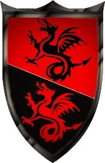
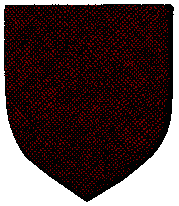

|

|
Das schwarze Brett
|
|
| Übersicht,
Allgemeines |
|
Öffentliche Entschuldigung (48  ) )
|
| TATARS (RIP) |
ich vergebe... |
01.07.10 17:44
|
|
| BerndBoy (RIP) |
Effekte neutralisieren?
WIPE? :)
YESSSS
Respekt:
Mit der Entschuldigung sich als Wiederholungstäter und augenscheinlichen Depp zu outen ist ja eigentlich schon respektable. Auch die Motivation und den Ehrgeiz zu zeigen, hier so oft mit mehreren Accounts anzufangen ist respektable.
Jedoch hieraus zu lesen, wie sehr sich der Hain wohl durch Multis aufgebaut bzw. entwickelt hat, und mit welch breiter Brust die Bewohner des Hains rumreisen, grenzt dadurch leider an Verachtung, also dem Gegenteil von dem man erreichen wollte :)
Die Tat des Multiusings verachte ich gar nicht so, weil ich es nachvollziehen kann. Immerhin kann man dadurch ein geniales Spiel mit viel mehr AP auskosten. Dennoch ist es unfaires Spiel und darf nicht geduldet werden.
Warum jedoch wurde es von der SL so spät erst rausgefunden?
PS: WIPE |
01.07.10 18:29
|
|
| Agesha Goldsucher (RIP) |
Wer ohne Sünde ist möge den ersten Stein werfen...
Viel anderes fällt mir hier grade nicht ein. Denkt ihr denn, nur der Hain alleine hat Multis genutzt? Wie viele Multiuser gibt es noch auf der Scherbe die bisher leider nicht aufgefallen sind? Sei es weil sie zu unscheinbar sind, oder sei es weil sie es technisch perfekt zu verbergen wissen.
Wieviele Multis sind bisher schon erwischt und gelöscht worden, ohne das es an die grosse Glocke gehängt wurde oder es bekannt wurde das sie gelöscht wurden? Wieviele Multiuser sind bisher schon ihrer Multis befreit worden und mussten dafür der Geier weiss nicht was für Bedingungen erfüllen? Nur das es nicht öffentlich wurde heisst es nicht das andere Spielergruppierungen nicht auch Multis haben. Das weiss keiner, wird auch wohl nie einer erfahren.
Ich habe die TS-Mitschnitte nie angehört, habe ich auch nicht vor denn: Sie gehen mich nichts an. Das sind private Unterhaltungen einiger Spieler.
Denkt ihr, nur die Hainspieler führen solche Gespräche? Denkt ihr nicht, das auch andere Spielergruppierungen abschätzig über andere Spieler, Support oder SL reden. Vielleicht in anderer Wortwahl, vielleicht blümeranter ausgedrückt.
Ich krieg hier langsam echt das kotzen (Sorry für die Wortwahl) wenn ich sehe wie sich hier immer mehr ooc an die Gurgel gegangen wird. Ich erinnere mich da nur an die Begebenheiten vor kurzem im Tavernenchat. OOC wird gehetzt wie nix gutes. Ich war ernsthaft verwundert, das es auf Lohra keine Prügeleien gab, so wie die ooc-Stimmung hier in letzter Zeit wahr.
Es ist ein Spiel, es bleibt ein Spiel. Wer es nicht schafft SW als das anzusehen was es ist, eben als Spiel, der tut mir ehrlich gesagt leid.
Ich find Multis Sch... das sollte eigentlich jeder wissen der mich kennt. Ti wurde bestraft, Ti hatte bereits eine Weile Spielpause und hat sie immernoch. Falls es noch nicht aufgefallen ist, ist Tis Name noch immer kursiv, also nicht freigeschaltet.
Ich denke man sollte es jetzt einfach mal gut sein lassen. Natürlich darf man skeptisch sein, wenn jemand mehrfach gegen bestehende Regeln verstösst. Und natürlich darf jeder seine Konsequenzen daraus ziehen. Aber ob man deswegen aufhören muss zu spielen, das weiss ich nicht. Und ich fände es Schade wenn diejenigen ihren Worten Taten folgen lassen würden.
Aber ich denke man sollte jetzt einfach mal nach vorne sehen udn nicht nach hinten und einfach weiterspielen. |
01.07.10 19:43
|
|
Lyra Callionymus
|
...mach sowas nie wieder, hörst Du... |
01.07.10 20:19
 |
|
| Heindal (RIP) |
*Wirft einen Stein*
Das einzige mal das ich jemals in meinem über 10 jährigen Browsergamesleben einen Multiaccount hatte, war in einem Testserver von New Hope - da war Multiusing ausdrücklich erlaubt - zum Testen. Und es war sterbenslangweilig. Für zwei Charakter Rpg schreiben - boaaah.
Ich spreche jetzt mal nicht nur über Titania, sondern generell über Multis, also bitte nicht böse sein:
Scherbenwelten ist ein Strategiespiel. Es sollte eigentlich so sein, dass diejenigen mit der besten Strategie und der besten Organisation weiterkommen und einen Vorteil haben.
Durch Multis entsteht hier eine Verzerrung, denn es sind eben diejenigen im Vorteil die Multiaccounts nutzen, nicht die Spieler die das Spiel am besten beherrschen.
An sich habe ich kein Problem damit das jemand mehr Geld bezahlt und dadurch einen Vorteil erhält - denn dies erhält eben auch Scherbenwelten.
Das Problem ist, wie diese zusätzlich gewonnene Macht eingesetzt wird. Spätestens wenn man sie dazu einsetzt um Spieler zu "beseitigen" schadet man dem Spiel.
Langfristig ist es keine gute Einstellung nur durch Betrug "gut" zu sein, denn man bleibt auch irgendwann stehen und entwickelt sich nicht wirklich weiter. Außerdem kann jeder einem Multi vorwerfen, dass sie nur dadurch groß geworden sind, das sie betrogen haben. Das wertet sämtliche anderen Leistungen ab.
Die Legitimation von Betrug indem man sagt "alle anderen machen das doch auch" und "wer ohne sünde ist werfe den ersten stein" ist einfach kindisch.
Ich denke mal das die meisten Spieler in diesem Spiel nur einen Account haben und einfach ein wenig Spaß haben wollen.
Das sich einige Leute darüber hinwegsetzen, weil sie glauben in die Accounts anderer Leute sehen zu können, ist einfach nicht in Ordnung.
Vielleicht ist es ja hier wie mit Doping im Profisport - jeder beschuldigt den anderen zu dopen - wenn es einer dann nicht macht wird er als "Schwächling", "Noob" oder "dumm" bezeichnet.
|
01.07.10 20:47
|
|
| Shayarîel Alcárin (RIP) |
Es geht hier doch nicht um die leidige Multi-Diskussion.
Ich denke, jeder, der sich hier zu Wort meldet, weiß, dass der Hain nicht die einzige Spielergruppierung sein, in denen es Multiuser gab/gibt. Darum geht es hier auch nicht.
Es geht vielmehr darum, wie oft man jemandem verzeihen kann, und wie glaubwürdig jemand ist, der a) behauptet hat, nicht beschissen zu haben (oder wartet, der genaue Wortlaut war glaube ich sowas wie: "Ich habe keine Multis von meinem Anschluss genutzt" - und - "Titania ist doch gar nichts nachzuweisen") und sich dann doch reumütig in die Öffentlichkeit stellt und sich entschuldigt und der b) das ganze schon 3 Mal getan hat.
Klar, der Spieler Florian mag menschlich gesehen ein netter Bursche sein, und ja, das kann er in meinen Augen wirklich, aber nichtsdestotrotz geht es hier um seine Glaubwürdigkeit und ich denke auch um die der SL.
Und die ist beide Male enorm in Frage gestellt.
|
01.07.10 21:06
|
|
Ninniach Lhuthien
 |
Multis sind dazu da, eine große Maschine alleine zu betreiben. Fallen die Multis weg, ist es eine Kunst, die Maschine am Laufen zu halten.
Ich wünsche Titania und allen, die nun ohne Multis auskommen müssen und wollen, das sie dieses Kunststück schaffen. |
01.07.10 21:09
|
|
| Biba Butzemann (RIP) |
ich finds lustig wie sie alle aus den löschen gekrochen kommen und mit Dreck werfen.. und gerade die, die am lautesten schreien sollten sich mal selbst in ihren nationen umschauen... die meisten haben selbst schon von mutlis provitiert, direkt oder über die nation, lehnsherren, verbündete...
Also mal gaaaanz kleine Brötchen backen meine Damen und Herren...
|
01.07.10 22:58
|
|
Galaton Dragus
 |
*Thor ein kleines Brötchen-Förmchen gibt* |
01.07.10 23:04
|
|
| Chevonne Siobhan (RIP) |
und du verbrennst auch sofort den geldschein in deiner tasche, weil er mal in einem drogengeschäft verwendet worden ist. das steht da nämlich drauf, thor ;) |
01.07.10 23:28
|
|
Daerwain Saelhugion
|
Glaube ich zwar nicht das wir in der Nation Multis hatten, aber ausschließen kann ich es natürlich auch nicht.
Aber selbst wenn es so wäre wäre meine Haltung nicht anders, so jemand gehört gelöscht und spätestens beim 2. Betrug endgültig, egal welcher Nation. |
01.07.10 23:48
|
|
| Eukal der Jeschmeidige (RIP) |
1. Ich erinnere an Opa Wetterwachs.
2. Ich war nie in einem Lösch verkrochen.
|
02.07.10 1:16
|
|
| Deirdre B. McMulenberc (RIP) |
Klar Thor, dazu steh ich auch, aber sie haben es nicht 3x getan :P und JA, das ist ein ganz schöner unterschied :P
und ja, über die, die mir da spontan einfallen, habe ich damals auch den Kopf geschüttelt, sowohl über verbündete, als auch über Feinde, die gesperrt wurden... aber ich würde es ihnen nicht mehr vorhalten. Warum? Weil ich davon ausgehe, dass sie aus ihren Fehlern gelernt haben... eine Fähigkeit, die ich eigentlich jedem erwachsenen Menschen zutrauen würde normalerweise.
Sollte allerdings jemand in meinem spielumfeld, der schon einmal gesperrt wurde, erneut gesperrt werden, würde ich auch hier darüber nachdenken, ob ich der Person den rücken stärke. Da ich da keinen Bock drauf habe, setze ich auf besagte lernfähigkeit ;) |
02.07.10 5:39
|
|
| Iga Pelogran (RIP) |
*auch mal einen Stein wirft und ausversehen Heindal trifft*
Meine "Nation" hat 100% keine Multis. So. |
02.07.10 7:45
|
|
Krâtos
 |
Doch, besteht nur daraus... =P
Und wenn du den ersten Satz glaubst Deirdre-Spielerin, dann bist du schlecht informiert.
Ich glaube aber nicht, dass es besonders hilfreich für diese Situation hier ist, wenn jetzt wie wild auf die Rechtfertigungsschiene gefahren und die Rundumanklage von allen an jeden ausgesprochen wird - das hilft Titania nicht weiter, der Webtales GbR nicht und den Betreibern der Diskussion genauso wenig. Das solltest bitte auch du bedenken Thorli, weil klar juckt es uns allen in den Fingern hier in die Bresche zu springen und Flo beizustehen... so wie du das gemacht hast, so wie Alessa und Hector ihm zur Seite stehen. Aber was hilft es? Die Spielleitung respektive die Gesellschafter des Spiels, haben eine Entscheidung getroffen, für die wir ihnen dankbar sein müssen. Sie haben auch oft Entscheidungen getroffen, die uns so richtig angekotzt haben - da haben wir gewettert, oder Vertreter aus unseren Reihen - und geerntet haben wir Hohn, Schimpf und Schande von denen, die jetzt der Spielleitung mitteilen, wie inkonsequent und schlecht sie ihre Entscheidung finden. Bezeichnend und anstelle der Gesellschafter wäre ich jetzt wohl an einem Punkt, an dem ich mir überlegen würde, welchen Wert der sonstige Zuspruch hatte, wenn er im gleichen Zug kippt, wie aus dem Zorn der anderen Spieler Dankbarkeit und Freude wird.
Im Endeffekt kann man bei dem aktuellen Stand der Dekadenz in diesem Spiel eine Diskussion von wegen Moral eh nur verlieren, da in den letzten 5 Beiträgen nur 1 Person etwas sinnvolles und neben dieser nur 1 weitere etwas wahres geschrieben hat.
Und wenn ich mal ganz tief in mich gehe und mir anschaue, was teilweise hier und anderenorts geäußert wurde, würde ich sogar rückblickend einen alten Nestor-Spieler mit seinen 40+ Accounts gegenüber einigen noch existenten Spielern als moralisch überlegen betrachten, selbst wenn diese in ihrer Gesamtheit nicht an die Accountmenge ran reichen... und dass ich so empfinde stimmt mich sehr traurig =(
Auch wenn die Beweggründe andere sein mögen, kann ich die Gedanken bezüglich eines weiteren Sinns in dieser Gemeinschaft von Zur-du-quin und wollium vom glänzenden Wolfstern schmerzlich gut nachempfinden... =/ |
02.07.10 8:15
|
|
| Deirdre B. McMulenberc (RIP) |
Kratos, ich glaub, du musst mir erstmal sagen, welchen ersten satz ich glauben sollte bzw. eben nicht ;) deinen ersten? ich geb auf solche aussagen ohnehin nichts ;)
Mir ist im Prinzip, sonst hätte ich nicht zu Anfang geschrieben, dass ich noch immer darauf hoffe, dass die Worte wahr sind, auch jetzt gleich, ob er spielen kann oder nicht. Wenn Webtales sich so entscheidet, dann ist das so, dann muss ich damit leben.
Mich pers. nervt es einfach nur, wenn man jemandem auf einer Basis beistehen will, die Äpfel und Birnen vergleicht. Was ich damit meine? Es schreiben spieler, dass sie es nicht Ok finden, wenn jemand nach 3 Sperrungen kein Hausverbot bekommt und es wird damit argumentiert, dass andere Multiuser nach Sperrung wieder spielen durften. Im Aufsatz in der Schule hätte man dafür den Vermerk "Thema verfehlt" vom Lehrer dazugeschrieben bekommen. Weil nicht das spielen nach Sperrung den Unmut oder gar das Misstrauen auslöst, sondern eben die Häufigkeit (selbst wenn man zuvor getätigte Aussagen mal rauslässt).
In die Bresche springen, ja, dafür hat man schließlich Verbündete in einem Spiel. Aber dann bitte doch sachlich, ohne Hohn für die, die sich zu recht veräppelt fühlen und mit Verständnis, selbst wenn eigentlich die Hainspieler das ausbaden müssen, da sie die Löcher, die durch Titanias Sperrung verursacht wurden, wieder füllen müssen und einem Spieler zum wiederholten Male auf die Beine helfen müssen (heißt im Endeffekt nur: jeder hat das recht, sich an der Nase herumgeführt zu fühlen ;) auch die, die ihm den Rücken stärken sollten).
Das es nicht weiterhilft, ist klar :) Aber Ärger herunterzuschlucken führt allenfalls zu einem Magengeschwür :)
ps: von dem großteil deines Beitrages bin ich Positiv überrascht Kratos :) selbst wenn ich nicht allem zustimme, gut geschrieben. |
02.07.10 8:57
|
|
| Deirdre B. McMulenberc (RIP) |
Danke für die Aufklärung mit dem Satz... |
02.07.10 9:51
|
|
| Bluemchen (RIP) |
Wer der Spielleitung das technische und organisatorische Gewaltmonopol zubilligt - und das tun wir alle, schon alleine, weil uns die normative Kraft des Faktischen dazu zwingt - der muss mit den Entscheidungen des Monopolisten leben, unabhaengig von der persoenlichen Einstellung zur Entscheidung.
Diese persoenliche Einstellung ist loeblich und als Input fuer die Diskussion sicher auch der Spielleitung willkommen, schon alleine, um zukuenftige Entscheidungen anzupassen und im besten Fall optimieren zu koennen. Sie kann und darf als Einzelmeinung aber nicht als alleinige Basis fuer Entscheidungsfindungen dienen, nicht einmal meine Meinung darf das.
Wer die Akzeptanz von durch die Inhaber des Gewaltmonopols (Spielleitung)getroffenen Entscheidungen fordert, hat seinerseits die Entscheidungen dieser Instanz zu akzeptieren. Das bedeutet nicht, man habe kein Recht, diese Entscheidung zu kommentieren oder zu kritisieren, aber es bedeutet, sie als seiner persoenlichen Meinung uebergeordnet anzuerkennen und damit zu leben. Wer das nicht kann, der muss sich dem System entziehen, was ich persoenlich bei Manchen als sehr schade empfinden wuerde, bei Manchen als akzeptabel.
Ich bitte aber alle, zu ueberdenken ob die getroffene Entscheidung Grund genug fuer sie ist, sich dem System zu entziehen, was hier bedeutet, zu spielen aufzuhoeren, oder ob nicht doch die systemimmanenten Vorteile eine Akzeptanz der Entscheidung rechtfertigen.
Florian (ich gestatte mir seinen Vornamen zu verwenden, persoenlich bekannt sind wir uns nicht) hat innerhalb der von der Spielleitung fuer diesen Fall festgesetzten Regeln seine persoenliche Entscheidung getroffen, das steht ihm zu. Ungeachtet aller anderen Vorkommnisse. Wenn, dann ist es die Aufgabe der Spielleitung, bisherige Vorkommnisse einzubeziehen. Nicht die irgendeinen Spielers.
Das kann man gut oder schlecht finden, das kann man auch so handhaben oder anders machen.
Aber es steht ihm zu. |
02.07.10 10:35
|
|
Otin ni Shim
 |
Respekt für die mutige öffentliche Entschuldigung, aber:
Wer einmal lügt, dem glaubt man nicht und wenn er auch die Wahrheit spricht.
Ich hoffe wirklich du kannst dich endlich von deiner Sucht nach Multis lösen, Flo.
Du schadest dir mit deinem Verhalten, weil du dich einer Freizeitbeschäftigung beraubst, die dir Spaß macht. Du bist ein anständiger Kerl, musst du wirklich alle daran setzten, dass Leute die dich nicht kennen gezwungen sind das Gegenteil zu denken? Mehrfache Sperren wegen Multiusing mit öffentlichen Entschuldigungen führen nun mal dazu, an deiner Ehrlichkeit zu zweifeln und das in dich gesetzte Vertrauen massiv in Frage zu stellen.
Dein Verhalten betrifft auch alle Spieler der Hain-Fraktion. Du bist aufgrund der Stellung deines Charakters Titania einer der wichtigsten Repräsentanten des Hains. Eigentlich solltest du dir deiner Verantwortung in der Hinsicht durchaus bewusst sein. Jede deiner Verfehlungen wird automatisch verallgemeinert und fällt auf die komplette Spielergruppierung zurück. Wie bereits von Hector angesprochen bist du nicht der einzige Spieler der letztlich aus der daraus resultierenden allgemeinen Abneigung leiden muss, sondern diese trifft auch alle anderen Spieler(innen) des Hains.
Für dich persönlich dürfte zwar die Meinung der Hain-Spieler von größerer Bedeutung sein, du solltest aber die restliche Scherbe nicht gänzlich ignorieren. Du schadest mit Multiusing besonders denen, die aufgrund deiner erkaufter Vorteile unter deiner Spielweise gelitten und dadurch den Spielspaß und jegliche Motivation Scherbenwelten zu spielen verloren haben. Jeder Spieler der geht ist ein Verlust für die Allgemeinheit, weil wieder ein bereicherndes Element weg fällt.
Würde irgendjemand bei einem Brettspiel mehrfach massiv schummeln (etwas anderes ist Multiusing für mich nicht) würde er kaum noch Leute finden, die mit ihm dieses Spiel spielen würden, egal was für ein feiner Kerl er ansonsten ist. Denn ist es nicht so, dass man irgendwann einfach den Spaß am Spiel verliert, wenn der andere durch betrügen sowieso immer gewinnt?
Dementsprechend ist die Entscheidung von Zur-du-quin und Wollium absolut nachvollziehbar, auch wenn ich sie sehr bedauere. |
02.07.10 12:34
|
|
| Yedlik san Dale (RIP) |
Da die Spielleitung nicht genau gesagt hat, was für ein Vergehen statt gefunden hat und da ich auch nicht weiß welche Konsequenzen Titania erleiden musste ist eine Beurteilung des Sachverhaltes durch mich nicht möglich. Hier muss ich frei nach Bluemchen der Spielleitung vertrauen, dass sie die richtigen Entscheidungen trifft.
Weil aber hier anscheinend jeden seinen Senf dazu geben muss, hier noch zwei Ratschläge von mir an Titania:
1) Lass dich nie sitten und sitte auch nie andere, dann sollte das Problem wohl nicht mehr auftreten und eine 4.Sperre wird es nicht geben.
Ich vermute hier einmal, dass der Grund der Sperre in dem Umfeld zu suchen ist, wenn nicht, dann ignorier den Vorschlag bitte einfach.
2) Um die Stimmung ooc zwischen den Spielern zu verbessern, versuch in Zukunft nicht gegen sondern mit den anderen Spielern zu spielen (vielleicht auch etwas auf den Hain einwirken, dass die es auch so machen wollen). Das heißt, dass es nicht sehr gut ankommt, wenn man anderen das Spiel vermiest, es ist für alle wesentlich lustiger, wenn man so spielt, dass jeder seinen Spaß beim Spiel hat.
Ich vermute hier halt, dass der Hain nicht das Ziel verfolgt am Ende alleine über die ganze Scherbe zu herrschen, wenn das doch der Fall sein sollte, dann ignoriere halt diesen Vorschlag und spiel(t) weiter wie bisher. |
02.07.10 15:30
|
|
Nemo van Delving
 |
Meiner Meinung nach gehörst du lebenslang aus diesem Spiel ausgesperrt mitsamt deiner Sippe von Spielfreunden, die seit Jahren das Spiel anderer nur zerstören und einen Dreck tun um "das Spiel zu berreichern". Auf so eine Bereicherung verzichte ich gerne.
Du hattest deine Chance ein mal, zwei mal, drei mal - jetzt ist genug. An deiner Stelle würde ich meinen Hut nehmen und einfach gehen. |
02.07.10 18:21
|
|
Cadacan von Tacheless
 |
Welchen Sinn macht es über etwas zu herrschen, wenn dann keiner mehr da ist, den man beherrschen kann?
Wir haben so gut wie immer eine gemäßigte Politik gefahren, die niemanden Zwang mit dem Spiel aufzuhören. Gleichzeitig haben wir nie einen Angriffskrieg gestartet, sondern, uns unserer gemeinschaftlichen Überlegenheit bewusst, auf Aggressionen anderer gewartet und darauf reagiert.
Ich gebe zu, dies sind subjektive Einschätzungen, die Kriegsgegner so nicht unbedingt teilen würden. Doch, sind wir ehrlich, sind die meisten Personen Feinde des Hains, die es innigst, von sich heraus wollten, da man in uns einen belastbaren Gegner fand, der nicht ohne weiteres kleinzukriegen und damit durchaus, für alle, spielspaßfördernd ist.
Dies sollte dich, Yedlik, bestätigen, dass wir niemanden das Spiel vermiesen wollen.
Wir bedauern den Abgang jedes einzelnen Spielers, egal ob nun Freund oder Feind oder neutral. Das Spiel hängt an jedem einzelnen und ob des ständigen Schrumpfens ist ein erhalt der Gemeinschaft in ihrer Gesamtheit wünschenswert.
Ich will an dieser Stelle gar nicht beurteilen, wie die Regeln auszulegen sind, welches Strafmaß wem bei welchem vergehen zu blühen hat. Ich werde daher nun auch nicht darauf eingehen, ob es richtig ist Titania wieder freizuschalten oder nicht. Diese Entscheidung hat jemand anders bereits getroffen und natürlich steht es jedem frei dies zu bewerten.
Andererseits muss ich sagen, dass eine erhalt Titanias für die Welt in dem Sinne förderlich ist, da der Spieler dahinter einer der wenigen ist, die noch RP betreiben. Der eine Rolle konsequent ausführt und mehr zu Stande bringt als dämliche Einzeiler im Forum, die, auf Dauer gesehen, mich mehr ankotzen als alles andere hier. Im weiteren finde ich es menschlich gesehen schwach, den Ausschluss eines Spielers zu fordern, der nie beleidigend oder dergleichen geworden ist. Für mich war die Strafe immer mit der Sperrung abgegolten und von dieser Meinung werde ich auch in Zukunft nicht abrücken, kann sich doch letztlich auch keine Fraktion davon freisprechen.
Ich bin, trotz der (komischen) Äußerungen des Nemo-Spielers, die wahrscheinlich von zu langem Sonnenbaden herrühren (fühle die bitte nicht angegriffen, ich finde deine Wortwahl allerdings unpassend und unangebracht, da du aufs schändlichste verallgemeinerst (und Verallgemeinerungen sind immer schlecht)), der Überzeugung, dass wir, der Hain, keineswegs anderen das Spiel zerstören sondern ihm ebenso Leben einhauchen wie es ein Nalon, ein Galaton, ein Altan, oder auch ein Fabius tut. Alle bedienen sich ihrer Möglichkeiten und Teilen mit uns dieses, an und für sich noch immer, wunderbare Spiel.
|
02.07.10 19:39
|
|
Baldur McMulenberc
 |
Is halt immer das Problem der Selbsteinschätzung, kann dazu nur sagen, dass einige ehemalige Spieler, mit denen ich letzt sprach und die eher als "neutral" gegolten hätten dies grundsätzlich anders sehen, und dabei handelt es sich vor allem um RP´ler... |
02.07.10 20:04
|
|
Falaron Talgrund
 |
Cadacan hat da in allen Punkten recht, wenngleich ich das mit dem "Wir sind kein Aggressor" als Blablub abtun würde :p Im Eigentlichen ist es unterste Schicht was andere, auch ich, hier aufziehen. Im Eigentlichen, wenn man nicht bedenkt das auch in uns ein Unmut geschürt wird.
Man kann ein halbes Jahr nichts vom Hain hören und das was dann als nächstes kommt, ist ne Sperrung. BOOM, 30 Accounts weg und ein neuer Char sowie der Verlust der anderen 3 richtigen Spieler. Selbes ist (meist) in einer anderen Größenordnung auch in meinem Lager zu finden.Ich selbst bin nicht unbedingt der Unschuldige der ich mal gewesen bin, spielt jedoch nichts zur Sache.
Zur Sache spielt das diese ganzen Geschichten einen unglaublichen Unmut schüren und das diese Community sich im großen GEGEN Multis ausspricht, weil nicht nur "euch" das Freude am Spiel kostete, sondern auch einem Chrissi, einem Ich bin nur schön wenns Licht aus ist und eniem Hobbyspieler dieses Spiel vermiest wurde. Ich erinnere mich gerne an die Anfänge der Final zurück, gerne an die Mitte, der Krieg zwischen Esturien und Hain, der sehr wohl einen starken Wendepunkt in der SW-Geschichte auslöste und wenn ich das alles mit dem vergleiche was wir nun haben, ist das einfach nur Rom gegen 470 n. Chr. Ein Schatten seiner selbst.
Man sollte aufhören Titania ständig zu verurteilen, das tun jene die die "Macht" hierzu haben. Man sollte aber auch jenen nicht unterstellen sie wären die bösartigsten Napolakinder der Welt, wenn sie die Äußerungen, die teils zu weit gehen, teils aber auch genau das treffen, was nicht unbedingt alle, aber viele denken, aussprechen.
Ich für meinen Teil werde mich nun aus dieser Geschichte zurückziehen, möchte mich für diverse Ausschweifungen die mein Temperament so mitgebracht haben entschuldigen und hoffe darauf das es mehr Spieler wie Cadacan schaffen, hier etwas zu schreiben dem man im Eigentlichen nur zustimmen und in Folge dessen über sich nachdenken kann. |
02.07.10 20:21
|
|
Gilgamesh
 |
"Sippe von Spielfreunden" die lebenslang ausgesperrt gehört? Nemo -Spieler, was soll der
Quark?
Ich spiele hier seit langer Zeit mehr oder weniger aktiv und gehöre auch zur Sippe.. Fühle mich angesprochen...Ein bißchen arg anmaßend finde ich das..
Schlimm finde ich auch, dass das Forum lesen keinen Spaß mehr macht, weil alle nur noch auf die andern rumhacken vor allem auf allen Hain Spielern anstatt sich mal Gedanken zu machen, wie man das Spiel bereichern kann. Es ist so schon langweilig geworden und damit wirds auch nich besser. |
02.07.10 22:08
|
|
Planet-Mors
 |
@Cadacan
Stelle dir mal folgendes vor:
Du spielst seit Jahren ein Spiel, baust Freundschaften auf, lernst real Spieler kennen und hast mit ihnen Spaß. Sowas kommt ja auch im Hain vor, wie ich weiter oben gelesen habe. Ja, sogar eine Spielergemeinschaft würde daran zerbrechen, würde Titania nicht wieder zugelassen werden.
Plötzlich vernichtet eine Nation (nehmen wir z.B. Chrome) deine Gebäude, deine Produktion, vertreibt dich von deinem Land, brennt deine Städte nieder. Einige deiner Freunde sehen angesichts der Übermacht des Hains keinen Sinn mehr im Spiel und hören auf. Du verlierst Freunde die vorher über das Spiel miteinander verbunden waren. Ok, sowas passiert. Schade um die Freunde. Aber der Hain rühmt sich angesichts einer gewonnenen Schlacht.
Dann wird Levthan gesperrt,.. aus welchen Gründen auch immer. Nehmen wir mal an, er hat sich Vorteile aus Multiusing erschlichen. Du grummelst, denn hätte er diese Vorteile nicht illegal genutzt, wären deine Freunde noch bei dir und der Krieg wäre evtl. ganz anders verlaufen? Aber der Schaden ist angerichtet und selbst die SL kann die Spieler nicht zurückholen. Stattdessen spielt Levthan einen neuen Account und Dank der vorher gut arbeitenden Wirtschaft (Multis sind ja so effektiv) ist die alte Macht bald wieder errungen. Die Unirüstungen und Waffen vorher geschickt bei einem anderen Acc zwischengeparkt, und schon ist der Schaden begrenzt.
Egal. Du spielst weiter, findest andere Freunde, andere Nationen, eine neue Heimat.
Es kommt erneut zum Krieg weil der Hain beschlossen hat, dass dein Land zukünftig Eigentum des Hains sein soll. Wie sagte Titania im Spiel: "Es ist unser Recht". Bekanntlich hat der Stärkere Recht und schreibt Geschichte. Mit der Macht des Hains und der Königsriege werden auch deine neuen Freunde vernichtet und verlassen ebenfalls wegen Aussichtslosigkeit das Spiel. Der Hain ist einfach zu mächtig. Ein Krieg aussichtslos, weil er nicht gewonnen werden kann.
Plötzlich wird der König des Hains gesperrt. Vermuten wir mal wegen Multiusings und dem illegalen Erschleichen von Vorteilen zum Erhalt oder Ausbau der persönlichen Macht.
Schon wieder hast du Freunde verloren, die eigentlich noch da wären, hätte die Gegenseite ehrlich gespielt. Auch mit der Sperrung sind die vertriebenen Spieler nicht wieder ins Spiel zu bekommen. Ein Schaden, den die SL nicht gutmachen kann, egal wie weit sie Städte runterwirtschaftet.
Wie auch immer. Du spielst weiter und findest erneut Freunde. Diese befinden sich auch im Krieg und Dank der Übermacht des Hains, der sich jetzt auf Titanias Macht gründet, wirst du erneut um alles gebracht. Wieder verlassen altgediente Spieler das Spiel. Die Macht des Hains kann nicht gebrochen werden. Da auch reale Freundschaften entstanden sind, verlassen weitere Spieler das Spiel, weil sie keinen Sinn mehr sehen. Der Hain jubiliert, weil ein weiterer Sieg errungen wurde.
Kurz darauf wird Titania gespert. Multiusing? Erschleichen von Vorteilen? Schade um die Spieler, die nun schon wieder gegangen sind weil sie über die Jahre sehen mussten, wie eine Bündnis in atemberaubender Geschwindigkeit gewachsen ist und uneinholbar zu sein scheint (Dank der Multis).
Jetzt überlege mal wie du reagieren würdest, wenn es wieder und wieder passiert, dass aus einer Ecke andere Nationen bekämpft werden. Bekämpft mit der Macht, die aus illegalem Nutzen von Accounts entstanden ist. Und nicht nur bei einer Person. Schauen wir uns doch mal die Sperrungen der letzten Jahre an. Wie viele hochrangige Spieler des Hainbündnisses wurden in den letzten Jahren gesperrt?
Glaubst du nicht, dass einige Spieler ein RECHT auf Wut haben? Euer Bündnis nimmt sich heraus zu sagen, dass Titania ein wichtiges Element ist, welches die Spielerschaft zusammenhält. Würde er nicht weiterspielen, bräche die Gemeinschaft auseinander.
Wie könnt ihr so anmaßend sein und davon ausgehen, dass es euch somit erlaubt ist, weiterhin zu bescheißen bis es halt wieder auffliegt? Was ist mit den anderen Spielergemeinschaften, die wegen eurem Multiusings zerbrochen sind?
Ich habe Verständnis wenn man es versucht,.. auf die Nase fällt und es erneut versucht weil man glaubt cleverer als die SL zu sein.
Aber hinzugehen und so selbstverliebt der irrigen Annahme erliegen, man würde das gesamte Spiel bereichern,.. Sorry, aber da fehlen mir die Worte.
Ihr bereichert das Spiel nicht, sondern mit eurer Spielweise macht ihr es seit Jahren kaputt.
Gesteht es bitte der gesamten Spielerschaft zu, sich hier Luft zu machen wenn sie feststellen, dass seit Jahren im Hain die Führungsriege gesperrt wird wegen Multiusings. Und ganz besonders haben diejenigen ein Recht auf Wut und Enttäuschung über euer Spiel, wenn es Spieler sind, die durch euer Multiusing wieder und wieder unterdrückt werden.
@Gilgamesh
Es ist langweilig geworden, weil durch die Übermacht des Hainbündnisses einfach keine Alternative mehr existiert. Und es ist besonders sinnlos wenn sich dann an die Öffentlichkeit kommt, dass die unterdrückende Macht durch Multis organisiert wurden.
Die Spieler, die hier rumhacken sind genau DIE, die sich die meisten Gedanken zur Bereicherung des Spiels gemacht haben. Denn DIE wollen, dass der Hain (und nicht nur der Hain) ENDLICH ehrlich spielt. Das wäre schon eine EXTREME Bereicherung.
Viele, die einmal wegen Multiusings ertappt wurden und sich entschlossen, diese Unart zu unterlassen, stellen fest, dass sie wesentlich mehr Spaß am Spiel haben, wenn sie zwar mit weniger Accounts,.. dafür aber mit echten Spielern spielen. Ich sage dir: DAS ist Bereicherung.
Im Laufe des Spiels habe ich alles am eigenen Leib erfahren dürfen. Zwar hatte ich nie selbst Multis, aber trotzdem trafen mich Sperrungen sehr hart. Irgendwann setzte sich dann die Erkenntnis durch, dass ein Spiel ohne Multis zwar härter ist, aber letztendlich besser für eine Nation, da es nicht mehr zu Sperrungen kommen kann. Spieleraccounts sind sicher vor einer Sperrung. Ein Titania-Account mit vielen Hülsen würde bei uns nicht mehr wegen Multiusings gesperrt werden können.
Fangt an und bereichert die Scherbe,.. bereichert sie mit einem ehrlichen Spiel. Auch wenn dies bedeutet, dass ihr mehrere Millionenstädte halten könnt,.. keine 5 oder mehr Könige stellen könnt, keine Konvente mehr aufkaufen könnt.
Ist es nicht ein viel angenehmeres Gefühl auch mal eine Schlacht zu verlieren anstatt zu sagen: "Hey, Titi, hast du noch irgendwo einen Acc? Ich brauche heute Abend 7 Türme und eine Burg, weil ich auf Cappu eine Stadt übernehmen will."
Bereichert die Scherbe indem ihr feststellt, dass ihr nicht mehr alles halten könnt und gebt somit anderen Nationen wieder die gerechte Luft zum Atmen,.. Raum zu siedeln. Evtl. kommen Spieler zurück wenn sie erkennen, dass es wieder eine Option gibt. Aber ich befürchte, dass euer Machtkonstrukt so verderbt und verfault ist, dass ihr unbedingt halten wollt, was ihr unrechtmäßig aufgebaut habt. Versteht, dass alles, was ihr mit Multis aufgbaut habt, ohne Multis nicht zu halten ist. Könnt ihr es trotzdem halten, spielt ihr weiterhin mit Multis.
Um die Spieler im Hain die ehrlich spielen tut es mir aufrichtig leid, dass sie nun wegen der Verfehlungen der Führungsriege ständig Beschimpfungen über sich ergehen lassen müssen. An diese ehrlichen Spieler ist mein Aufruf natürlich nicht gerichtet. Diesen Spielern (und ich gehe davon aus, dass es einige sind) wünsche ich so viel Mut und Schneid, iher Führungsriege mal derbe den Marsch zu blasen bevor sie die Lust am ehrlichen Spiel verlieren und aufhören. Es hilft..... ;-) |
03.07.10 0:59
|
|
| Kage Hitomi (RIP) |
Zum einen ist Levthan nie gesperrt werden sondern hat lediglich den Fehler begangen, sein Abo nach Abschluss zu kündigen, um selbst über Aboneuabschluss entscheiden zu können, durfte aber kein neues Abo abschließen (mit dem ersten Levthan-Account) - Selbes Prozedere des verbotenen Neuabschlusses gab es zeitgleich bei Falster, nur dass er seines nicht standardisiert gekündigt hat und daher erhalten blieb. Er wurde in der Tat gut 1-1 1/2 Jahre später gesperrt.
Genauso wie gesperrt wurden:
Negus
Krassus
Jack Pott
Almera (zwar als er bereits im Hain war, allerdings mit Accounts, die er bereits Jahre zuvor angelegt oder von Nestor und anderen Spielern geerbt hatte)
Nherin vom Glutwindclan
Eisenmann von Frankental
Und von welchen Nationen und Spielern, die vertrieben wurden wird in diesem "Gedankenspiel" denn genau gesprochen?
Die Namen der einen Partei zu nennen und die der anderen zu einem "nehmen wir mal an, es gäbe diese Leute" zu vereinfachen ist recht makaber...
Zumal man genauso gut fragen kann, aus welchem Grund es denn so einfach ging, dass die Accounts Mink, Altan Stormwind, Hallelujah Haptism oder Syktykwar mal eben von alten Spielern übernommen werden konnten... warum gerade in dem Moment, als dieser Haufen alter Spieler zurück kehrte ein Haufen anderer Spieler wie Solo Kandur, mayman oder Zander keine Lust mehr hatten und bereitwillig gegangen sind... warum der Account Liloë Silberfang noch die Tage bevor und am gleichen Tag, als im Off-Topic ein Anschlag gemacht wurde, die Spielerin Nadine wäre am vergangenen Dienstag tot aufgefunden wurden, online gewesen ist...
Zu all diesen Vorgängen, zu weiteren die nicht erwähnt werden müssen und auch zu diesem Post von dir, Planet-mors, kann man sich Gedanken machen - jeder die seinen und jeder die, die er für richtig hält.
Die meinen sind, dass einige dieser Vorgänge verbunden mit gewissen Äußerungen in höchstem Maße unmoralisch sind, andere (wie dieser Post) eine Frechheit und Geschmacklosigkeit sondersgleichen und wieder andere absolut makaber.
Wenn zu dem zeitgleich von einem Huramasch Schädelspalter alias Ghost Telrùnya, der selbst von einer weißen Weste nicht einmal träumen möchte, Okkupationsdrohungen an kleinere Spielergruppen ausgesprochen und Invasionsversuche gegen "einfache Händler" der Scherbe vorgenommen werden, dann fragt sich an der Stelle auch, wie viel Wert denn deine Mitspieler auf den "Spaß" und die "Spielqualität" anderer Spielergruppen legen... scheinbar nicht so viel, wie du dir vom Hain wünschst.
Natürlich kann man wunderbar mit Schlamm werfen und sich in Unschuld sonnen, wenn jemand anderes am Pranger steht...
Gibt ja schließlich nichts befreienderes und einfacheres. |
03.07.10 1:36
|
|
| Yedlik san Dale (RIP) |
@Cadacan:
Kann ich leider nicht so sehen. Wenn der Hain wirklich eine gemäßigte Politik betreibt, wieso sind dann so viele gegen Euch eingestellt? Aus meiner Sicht ganz einfache: Weil es nicht immer nur ein Verteidigungskrieg war ("Tschuldigung, war ein Kollateralschaden, aber Entschädigen tun wir nicht"), weil ihr dann ("So, ihr habt unseren Dieb gesehen, der bei euch gestohlen hat? Glaub ich euch nicht") und in allen anderen Fällen, in denen ihr was von anderen wollt, mit eurer militärischen Macht droht ("Wenn du willst kann du mir auch nicht geben was ich will, aber denk mal nach was dann passiert") und weil die Verhältnismäßigkeit der Reaktion von euch nicht stimmt ("Der Hain hat kein Interesse lange Krieg zu führen. Da stellen wir leiber gleich eine Armee hin, die der andere auf keinen Fall besiegen kann"). Denk mal nach wie viel Spaß solche vorgaben von eurer Seite bei den Leuten machen, die keinen Krieg mit euch führen wollen.
Das was man der Führung des Hain zu gute halten muss: Sie versteht es hervorragend genau diesen Umstand im Hain zu verschweigen oder zu banalisieren. Wenn jemand vielleicht 10 Millionen einbüßt, dann ist das für euch nicht der Rede wert, weil das kein nennenswerter Betrag ist, aber für andere kann das ihr ganzes Vermögen sein und sie hören zum Spielen auf. Natürlich hört ihr dann von der Person keine Kommentare mehr und der Fall gerät in Vergessenheit. Und bei der Anzahl an Aktionen die ihr in den letzten - wie viele Jahre geht das Spiel schon? - durchgeführt habt reicht es doch wenn bei jeder der Xten Aktionen einer aufgehört um die Scherbe halb zu entvölkern.
Das Problem ist halt einfach nur der Standpunkt. Klar, von Seiten des Hains gibt es kein Problem. Und klar, wenn ihr wirklich glaubt so zu spielen, dass alle Spaß und Freude am Spiel haben, dann kann ich euch jetzt schon sagen, dass der Hain am Ende die ganze Scherbe regieren wird. Einfach weil sonst niemand mehr da ist.
Ein Freund hat mal mir gegenüber den Spruch geäußert: Für den Mann mit dem Hammer schaut alles wie ein Nagel aus. Ich sehe die Spielweise des Hains genau so: Wenn der Hain etwas machen kann, dann macht er es auch. Und aus dem Grund bin ich recht skeptisch ob ihr es wirklich schafft Multis bei Euch zu vermeiden. Ihr reizt das System bis zum Ende aus und geht an alle Grenzen heran.
Tschuldigung, ist schon spät und hatte zu viel Bier heute und ja, ihr seid kein Einzelfall. Auch andere verhalten sich so. Und nein, Titania hat mit den hier angesprochenen Fällen nichts zu tun gehabt. |
03.07.10 1:55
|
|
| Yedlik san Dale (RIP) |
Ach ja, ich würde in eurer Situation selber wahrscheinlich ähnlich handeln, aber ich sehe es langsam and der Zeit, dass man darüber nachdenkt. |
03.07.10 1:59
|
|
| Bibi Biberzahn (RIP) |
Cadacans Posting ist einfach nur lächerlich, wenn ich bedenke dass der Hain meine Holzfällerhütte nur deswegen zerstört wurde, weil ich den "kriegswichtigen" Rohstoff Holz an Hainfeinde verkauft habe (genauso wie ich Holz an den Hain verkauft habe, völlig ohne unterschied).
Der anschließende Angriff mit mehreren 500 Kavas wäre sicher nicht möglich gewesen, wenn die Stadt weiterhin mit HOLZ versorgt gewesen wäre.
Was aber den Fass den Boden ausschlägt ist die Multiverdächtigung von Kage gegenüber Liloe Silberfang. Ich erwarte hier entweder Belege für diese Anschuldigung oder eine Entschuldigung.
Über das Spiel kann man sich streiten, aber (in meinen Augen unwahre) Verdächtigungen gegenüber einer Toten sind mehr als geschmacklos. |
03.07.10 3:33
|
|
| Chevonne Siobhan (RIP) |
Äh, Bibi, die Verdächtigungen waren bestimmt nicht in Richtung der Toten. Sondern viel mehr in Richtung derer, die den Acc einer Toten missbraucht haben. Da liegt die Unverfrohenheit auf der anderen Seite, wie man in diesem speziellen Fall sagen muss.
Nichts desto trotz haben Yedlik und P.M. Recht. Denn ich weiss von vielen, die zwar noch nicht aufgehört haben, aber resigniert ob der Übermacht des Hains. Ich kann mich gut daran erinnern, wie Spieler des Hains mal eben aus einer Laune heraus Gebäude einer mir sehr lieben Person einfach mal platt gemacht haben. Es wurde mal eben das gesamte Vermögen vernichtet. Und wären da nicht gewisse Verbandelungen vorhanden gewesen, wäre diese Person heute nicht mehr in SW. |
03.07.10 7:52
|
|
| Chevonne Siobhan (RIP) |
Es gibt übrigens auch einige, die hier nichts schreiben, weil sie Angst vor Repressalien haben (begründet oder nicht), oder weil sie eben auch schon resigniert haben und nur noch hoffen, dass der Kelch an ihnen vorbeigeht, weil sie in einer Ecke siedeln, die den Hain nicht interessiert. |
03.07.10 7:59
|
|
| Chevonne Siobhan (RIP) |
Und ich möchte auch nochmal betonen, dass es mir nicht um den Hain geht, sondern um wiederholtes Multiusing. Der Hain liefert halt die besten Beispiele. "Ehre", wem "Ehre" gebührt. |
03.07.10 8:07
|
|
| Chevonne Siobhan (RIP) |
"Es gibt übrigens auch einige, die hier nichts schreiben, weil sie Angst vor Repressalien haben..."
Ich habe übrigens zu dieser Aussage einigen Zuspruch via Diplo erhalten. Namen nenne ich natürlich keine. |
03.07.10 9:52
|
|
Planet-Mors
|
Repressalien ist ein nettes Wort. *g* Seit meines ersten Postings werden mir PPs geklaut. ^^ |
03.07.10 10:06
|
|
| Chevonne Siobhan (RIP) |
Bei mir seid Lohra. Aber das ist doch reiner Zufall. Es können doch alle OOC von IG unterscheiden. *ironie off* |
03.07.10 10:44
|
|
| Chevonne Siobhan (RIP) |
PS: Was mir übrigens da vorbeigeht, wo ich drauf sitze. Ist wohl auch eine Art von Resignation.
Das war jetzt nicht ironisch. |
03.07.10 10:46
|
|
Baldur McMulenberc
|
Schonml darüber nachgedacht, dass Liloe einfach "regülär" vertreten wurde, und der Sitter nichts davon wusste? Ich weiß es ehrlich gesagt nicht, aber jemandem in so einer Sache Dinge zu unterstellen find ich doch entsetzlich und zeugt für mich von jeglicher fehlender Moral desjenigen, der diese Aussage tätigte. Also etwas Respekt und Niveau dürfte man hier doch erbitten... |
03.07.10 10:52
|
|
| Gwydion de Ville (RIP) |
@all:
ihr driftet komplett ab. Hier geht es nur um Titania. Klar kommen nun wieder Kamellen auf wie "der böse Hain" und "ihr habt aber auch", aber es ist keine Bereicherung für das eigentliche Thema. Benutzt dafür bitte einen extra Thread oder bleibt wenigstens näher am Thema "Titanias neue Chance".
|
03.07.10 11:16
|
|
Support
 |
Um das hier, soweit noch möglich, im Keim zu ersticken, weil es auch nicht zur Diskussion beiträgt:
In den Account Liloë Silberfang wurde letztmalig am 29.09.2009 eingeloggt, Meldung im Off-Topic über Ihren Tod ist vom 17.11.2009. |
03.07.10 12:54
|
|
Kantar
 |
Hm ich habe eine Idee... warum machen wir aus "Scherbenwelten" nicht ein "Hetzwelten" wo jeder soviel hetzen ,mutmaßen, rumstänken kann wie er will mensch ich glaube wir wären unangefochten an Platz 1 der Spiele-listen und hätte warscheinlich 1000sende neuer Mitspieler..
Da fällt einem nix mehr ein.. |
03.07.10 14:30
|
|
Bhaal
|
Der Spieler hat seinen Fehler eingesehen und gibt ihn offen zu.
Die Spielleitung hat eine Entscheidung getroffen. Sie hat von erweiterten Sanktionsmaßnahmen, die über das Sperren der Accounts hinaus gehen, Gebrauch gemacht.
Es gibt auch andere Fälle, in denen es Spieler erst nach dem zweiten mal gelernt haben, dass es für das gesammte Spiel und auch den eigenen Spielspaß förderlicher ist, sich an die Regeln zu halten. Es ist also nicht ausgeschlossen, dass selbst Titania einsichtig wird und mit ihr vieleicht auch andere.
Ich gehe davon aus, dass sich die Unschuldsvermutung zu Lasten von Titania umgekehrt hat.
Ich hege absolut keine Sympathien für den Spieler. Aber ich nehme diese Entschuldigung zur Kenntnis und hoffe, dass diejenigen, denen es wie blanker Hohn vorkommen mag, dass der Spieler weiterspielen darf, diese Entscheidung akzeptieren können.
Da diese Sperrung nun nicht zum ersten mal, sondern vielmehr bereits ein drittes geschehen ist, um hier Gerüchten vorzugreifen, gab es zwischen der Spielleitung und uns Dialoge, ob einer weiteren Spielteilnahme meinerseits erneut zugestimmt werden, oder einer Art Hausverbot erteilt werden sollte.
Hier einigten beide Seiten sich auf eine verschärfte Form der Bewährung, unter besonderer Beobachtung und entsprechenden Bedingungen unter den gegebenen Mitteln über welche die Spielleitung verfügt.
Über genauere Inhalte kann ich an dieser Stelle jedoch nichts schreiben, da mir nicht klar ist, ob dies von der Spielleitung in dieser Form gewünscht ist.
Sollten hier jedoch keine Einwände bestehen, stehe ich jedoch für persönlich Gespräche jedoch gern zur Verfügung.
Ich denke es wäre angemessen, das - nach Absprache der Beteiligten - an dieser Stelle im Forum zu präzisieren, um die Gemüter zu besänftigen.
--------------------------------------------------
Noch ein paar Worte in Richtung Eremiteninsel.
Der Hain ist auf einem riesen Haufen Kameldung gewachsen in dem inzwischen auch ettliche Multiaccounts begraben liegen.
Es ist bedauerlich, dass einige tatsächlich der Meinung sind, sie wären eine Bereicherung für die Scherbe, wenn sie diese Tradition weiter pflegen. |
03.07.10 15:37
|
|
Nemo van Delving
|
Ich glaube das einzige was dieses Spiel noch retten kann ist ein Austausch der Community, da schließe ich mich selbst nicht aus. Wie soll man hier jemals wieder ein Spiel spielen wenn man außerhalb davon so verfeindet und voller Vorurteile ist?
Da können einzelne Spieler denen was am Spiel liegt oder selbst die Spielleitung machen was sie wollen. So lange die Bahnen so festgefahren sind bewegen wir uns immer nur auf jeweils der eigenen Linie. Manche schießen darüber hinaus und sind endgültig weg... andere fahren so lange hin und her bis das Spiel mal wirklich einfach zu Ende ist.
|
04.07.10 0:51
|
|
Nemo van Delving
|
Ach ja, Gilgamesh:
Ausnahmen bestätigen die Regel, ich kann nur von meinen Erfahrungen sprechen, die mittlerweile ein wenig älter sind, da ich die letzte Zeit nicht wirklich im Geschehen war - außer täglich ein paar Orks umzuhauen oder Getreide zu sammeln.
Das war von mir zu pauschal ausgedrückt, aber meine Erfahrung ist eben, dass die meisten aus diesem Verbund die selbe Strategie verfolgen. Das auch "normale" und gutmütige Spieler in der falschen Nation landen kann schon mal passieren... :-) |
04.07.10 0:53
|
|
| Mageta der Löwe (RIP) |
hrhr also sry.. ich bin mal offtopic.. aber was laberst du hier für einen Bockmist Nemo? Gehts dir noch gut?
Müssen hier eigentlich alle immer Roland Koch spielen? Was bringt euch das Bitte?
Ich spiele den Mist hier schon seit zig Jahren und hab seit zig Jahren noch NIE jemanden grundlos kaputt gehauen oder irgendwas anderes dergleichen gemacht. Das gleich kann ich auch von zahlreichen anderen Mitspielern sagen mit denen ich in der Zeit zusammen gespielt hab, ob das nu schon tote (ausgeschiedene) Leute sind wie Mithril/Serafina/{Leute deren Namen ich nicht mehr weiß weil ich mir außer Matheformeln und Programmiersprachen nix merken kann} oder noch aktive Leute in meinem Umfeld. Und das sind alles anormale Leute oder - was du wohl eher meintest - Arschlöcher? Muss ich jetzt hier mit Hitler-Vergleichen ankommen, dem einzigen und universellen Argument was ein Deutscher Heute überhaupt noch versteht, damit hier Einzelne mal merken was sie für einen Mist von sich geben?
Also tut mir echt Leid, ich hab nix gegen ne gute Diskussionskultur aber was ich mir in dem Forum hier immer und immer wieder durchlesen muss, wie scheiße und wie abartig mieß wir doch alle sind, obwohl ihr und nicht mehr wirklich kennt. Ihr denkt vielleicht ihr könnt eine Gemeinschaft von vielen 100 Leute mal eben über einen Kamm schären.. aber genau deswegen halten euch manche für genau das, was ihr hier uns so vor die Füße werft.
So ein Gelaber ej.. da bekomm ich ja Kopfschmerzen von. Kriegt euch mal wieder ein und denkt mal in normalen Bahnen. Das Medium Internet und seine Anonymität tut echt nicht allen Menschen gut. |
04.07.10 1:18
|
|
Galaton Dragus
|
Richtig Mageta, zumindest dein letzter Absatz wenn man objektiv betrachtet. Ich glaub ihr habt alle viel zu viel Zeit oder viel zu wenig Lichtschutzfaktor in eurer Sonnencreme ;) Hier ist so langsam nichts mehr wert auf irgendwas inhaltlich einzugehen. |
04.07.10 16:01
|
|
| Loewen von Aldarion (RIP) |
îch wollte eigentlich nichts mehr dazu sagen, weil, spieler werden bedroht, da manche nicht mehr unterscheiden zwischen rpg und rl--> was hier abgeht ist schlichtweg gesagt eine sauerei und ich verstehe die sw-leitung nicht, das sie sich auf sowas eingelassen hat.
im klartext, die sw-spielergemeinschaft ist gegen solche spieler, die schon mehrfach die chance bekommen hat und das sich manche leute nun hinstellen und jene noch als intelligenzlos bezeichnen, nur, weil sie ihr meinung gesagt haben, ist der gipfel und die sw-leitung duldet die beleidigungen der spieler |
04.07.10 18:08
|
|
someone
 |
die sw-leitung hats aber auch wirklich nicht leicht und setzt sich nicht aus kindergärtnern zusammen, zumal die meisten hier eigendlich schon erwachsen sind und demnach in der lage sein sollten sich auch so zu verhalten.
was ich zum fall titi und zu multi-using im allg. denke habe ich bereits gesagt, auch muss ich mich baahl anschließen, welcher darauf verweißt, dass von uns eigendlich keiner weiß worum es sich bei der "verschärften Form der Bewährung, unter besonderer Beobachtung und entsprechenden Bedingungen" handelt.
meinungen, vorschläge und auch forderungen welche konstruktiv formuliert, belegt und begründet sind und auf titanias entschuldigung oder den umgang mit multis eingehen habe ich alle gerne gelesen und bringen uns evtl. vorwärts.
doch bitte spart euch beleidigungen so wie anschuldigungen ohne sinn und beweiße. |
04.07.10 21:00
|
|
| Siddhartha (RIP) |
An all die maßlos enttäuschten, verbitterten, sich dem Hain unterlegen fühlenden:
Organisiert Euch! Auch der Hain ist verletzbar! Man muss nur die Gemeinschaft finden, die in der Lage ist, dem Hain Schäden zuzufügen. Und das ist gar nicht sooo schwer...
Dann freut man sich auch, wenn man Titania trifft, denn da besteht wenigstens noch eine Chance auf einen Sieg im Wachdienst.
Einzig muss man sich hüten, dass diese Gemeinschaft nicht von Hain-Multis infiltriert wird *böse grinst* |
06.07.10 10:52
|
|
| Tharsonius (RIP) |
Wozu denn Siddhartha? Dafür habt wir doch die Hainkönige um ihnen wirklich Schaden zuzufügen. 7 Mal hat es doch jetzt schon super funktioniert. Wir müssen nur zuschauen und können uns uns Fäustchen lachen wenn bei ihnen mal wieder eine Hainstadt mit all den Waren und Armeehülsen geschrottet wird. Das ist viel unterhaltsamer und man muss sich nicht mit diesen ... (denkt euch hier ein liebes nettes Wort) abgeben. Ich glaube nicht alle Angriffe der Final zusammengenommen haben soviel Werte bei ihnen zerstört wie die Sperrung eines Hainkönigs. Hey wir zwingen den Hain doch mit unserer überlegenen Spielweise dazu Multis zu nutzen. Und BUM schon knallt es wieder einen Hainkönig weg.
Also jetzt Titania 4.0. Na viel Erfolg, ich bin mir sicher du bleibst deinem Wesen treu also enttäusche mich nicht. Solange Falli noch mit dem Klingelbeutel für dich im Hain betteln gehen kann waren es noch nicht genug Sperrungen. Also halte dich ran. Wir sehen uns bei Titania 5.0 wieder. Armer Mensch. Wenn du nicht so lächerlich wärst würdest du mir leid tun. |
06.07.10 16:10
|
|
Elrohir v. glänzenen Wolfstern
 |
Langsam sollte hier mal seitesns des Supports eingeschritten werden.
Was auch immer Ti getan haben mag - niemand hier hat das Recht, ihn in der Form zu beleidigen.
Ich bin sicher kein Hainfreund und kenne Flo auch nur vom kurzen sehen und hinundwieder Wortwechsel in Lohra.
Aber unabhängig davon sollte ein Spieler keinen anderen Spieler öffentlich in der Form beleidigen dürfen, wie es hier einige machen - siehe Tharsonius.
Wenn jemand das im RPG macht, um eine provokante Reaktion hervorzurufen, so mag das gehen.
OOC ist das ein absolutes nogo, und sollte meines Erachtens nach ebenso bestraft werden, wie andere Sachen.
Wie wärs denn mit einem Tharsonius 4.0 wegen fortwährender öffenlticher Beleidigung und Schmähung anderer Mitspieler.
Sorry, Tharsonius, wenn ich dich jetzt hier so rauspicke, das gilt natürlich für alle anderen, die sich hier auf einer überaus persönlichen und infantilen Art beleidigend äußern genauso.
Abgesehen davon bin ich der Meinung, das der Thread hier langsam mal geschossen werden sollte, da eh niemand mehr etwas Sinnvolles dazu beitragen möchte. |
06.07.10 16:52
|
|
| Lómaralas Nil-Gar (RIP) |
Ich möchte mich Elrohir anschließen.
Die Meinung der meisten Spieler, die in diesem Thread schreiben, kann einem mehr Spielspass nehmen als irgendein Multiaccount-User der Laoch. |
06.07.10 23:19
|
|
| Chevonne Siobhan (RIP) |
Ich denke nicht, dass es El um die Meinung ging, sondern viel mehr um die Ausdrucksweise. Denn die Meinungsfreiheit ist ein hohes Gut in unserem Lande. Es steht also jedem frei diese in einem angemessenen Tonfall zu äussern. |
06.07.10 23:55
|
|
someone
|
ich hoffe sogar sehr, dass das thema nicht zwischen verbalen angriffen untergeht, aus achtung vor dem spielspaß einfach totgeschwiegen wird oder auf der ewigen suche eines ergebnisses verebbt. |
07.07.10 0:13
|
|
| Léras Baroque (RIP) |
tharsonius...wenn es nicht so lächerlich währe könnte ich über dich lachen! Finds traurig und in der Tat schließe ich mich Elrohir auch an!
Multis? Klar voll fürn arsch, aber nicht der weltuntergang und wenn es wirklich so gut aussieht dann lass mal IG-Krieg von diesem Thread fern denn darum gehts hier sicher als aller letztes!
Spielercourage leute, sogar ich als teils jüngster Spieler habe davon anscheinend mehr als manch anderer hier obwohl es mir mehrfach in meinen 7 jahren Spielzeit mehr geschadet hat als vielen von euch... |
07.07.10 0:47
|
|
Sìn Mortiarea
 |
Ich möchte mich ganz herzlich beim Lómaralas Nil-Gar-Spieler bedanken.
Er zeigt uns hier sehr schön auf, dass Multiusing, von einigen wenigen engstirnigen Spielern als schwerer Regelbruch empfunden, doch in eigentlich nur ein kleines Kavaliersdelikt ist, über dass man großzügig hinwegsehen kann, gerne auch öfters.
Die Entrüstung darüber ist einfach nur kleinlich.
(Um Missverständnissen vorzubeugen: Ich bin zuweilen ein Zyniker) |
07.07.10 8:14
|
|
Solara
|
in einer sache nicht einer meinung zu sein und darüber (sachlich) zu diskutieren oder auch seinen unmut zu äußern ist eine seite, die natürlich zweifelsfrei jedem zusteht und zur meinungsbildung einer community beiträgt.
die art und weise aber WIE das hier von einigen spielern praktiziert wird und teilweise in beleidigungen oder verächtlichen äußerungen ausufert, ist absolut auf unterstem niveau sofern man von niveau überhaupt noch reden kann.
einen menschen als lächerlich und arm zu bezeichnen, wie vom tharsonius spieler geschehen, vor allem in der öffentlichkeit - verlangt in meinen augen schon eine forensperre gegen den autoren. zumal entschuldigende worte im weiteren verlauf des postings nicht gefallen sind, und wir uns hier keineswegs auf ebene des ig-chars bewegen.
ich schließe mich diesbezüglich denjenigen letzten vorrednern an, die als einige der wenigen spieler in diesem posting noch zwischen sachlicher kritik und hexenjagd zu unterscheiden wissen, nicht aber den zynikern. |
07.07.10 11:20
|
|
Falaron Talgrund
|
Ich fühle mich zukünftig von jedem beleidigt der mich nicht 100% ernst nimmt, fordere selbe sperren für jene die das in lustiger oder weniger lustiger Form kundttun und versuche die Gründe, weshalb man mich so behandelt, stets beim anderen zu suchen, so lange ich Zapply Mc Clownfisch heiße und Pommes mit Ketchup und Mayo mit zwei zusammengebundenen Strohhalmen esse.
Mit anderen Worten: Der herbe Ton ist echt bescheiden, war er immer. Aber der herbe Ton ist hier auch nur ein Echo.
Btw Lomaralas :) bekommst von mir 2000 Sklaven wenn du in einem bereits toten Thread nichts mehr schreibst um ihn zu beleben + derlei mit Sinn gespickten Kern nur mehr über Diplo verbreitest. Das unterbindet ein kommendes Magengeschwür und könnte mir womöglich das Leben retten.
Titania muss kein Thema mehr sein.. Einfach backen zusammenpressen und durch. Ändern kann man bestimmt kaum etwas an der Entscheidung der SL und das soll doch nun seine letzte Chance sein. Nutzt er sie richtig, hat die Community nen Spieler wieder, den ich Rollenspieltechnisch gar nicht so absurd finde. Nutzt er sie nicht, müsst ihr auch nicht mehr maulen. Dann ist das geschehen wonach viele geschrien haben.
Und so btw.: Ich lasse Tharsonius lieber Beiträge schreiben als ein weiteres Mal mit nem Multi (Feund/Feind ist mir egal) RPG zu betreiben oder von einem abgezogen zu werden oder sonstwas. Tharsonius Worte kann ich nämlich geschickt umgehen, wenn ich es möchte :) Ich lese zB Thors Beiträge nicht, wenn kein lustiges Bild dabei zu sehen ist =)
Beschäftigung hier:
http://www.weebls-stuff.com/songs/Amazing+Horse/
Immer schön zuhören :)
|
07.07.10 15:27
|
|
| Chevonne Siobhan (RIP) |
Mirdan, ich denke, was hier den meisten sauer aufstösst und nicht nur Dir die Vorlage für ein Magengeschwür bereitet, ist die Tatsache, dass man das Handeln der SL auch wie folgt auslegen kann.
Ich für meinen Teil habe noch nie Multis gehabt. Also hätte ich ja theoretisch noch dreimal gut. Wenn man jetzt noch das durchschnittliche Accountaufkommen pro Multiuser und die durchschnittliche Verweildauer dieser Accounts vor der Entdeckung wüsste, könnte man durchaus den Rest der Community gleich aufschliessen lassen.
Ich weiss, dass es ironisch klingt. Ist aber nicht so gemeint. Was ich damit nur bildlich machen möchte, ist die Tatsache, dass sich bestimmt der ein oder andere schon gefragt, ob ein oder zwei weitere Accounts nicht die Spielfreude erhöhen könnten.
Das kommt für mich allerdings nicht infrage. Ich verbringe schon ausreichend Zeit vor dem Computer.
Und was bei der ganzen Sache einfach fehlt ist die Transparenz. Meiner Meinung nach sollte es ein schwarzes Brett geben, an dem die Vergehen der Accounts angeschlagen werden. Wichtig hierbei ist, dass nur die Charnamen auftauchen. Persönliche Daten der Spieler dürfen dort natürlich nicht auftauchen. Das hat zum einen den Vorteil, dass die Community auch mal mitbekommt, dass was passiert in Sachen Regelverstösse. Hierfür wäre natürlich wichtig einen Katalog aufzubauen, der die Strafmaße festlegt. Individuelle Beurteilung schön und gut, aber dazu ist die Community einfach zu gross. |
08.07.10 11:43
|
|
| Agesha Goldsucher (RIP) |
Dieses schwarze Brett hätte vor allen Dingen den Vorteil das man endlich mal sieht das nicht nur im Hain Multis gesperrt werden sondern auch bei anderen Nationen. Weil irgendwie kommts immer nur an die Öffentlichkeit wenn im Hain wieder gesperrt wurde, von den anderen Nationen kriegt man nur zufällig bis garnix mit.
Und ich denke mal das würde durchaus einigen die Augen öffnen das es halt nunmal leider in verschiedensten Nationen Multis gibt/gab. |
08.07.10 18:09
|
|
someone
|
ein "pranger" und ein grobes regelwerk - das fänd ich auch ein gutes vorgehen. |
08.07.10 18:46
|
|
| Deirdre B. McMulenberc (RIP) |
Agesha, das stimmt nicht, und ich denke, das weißt du auch ;)
ich erinnere mich da an sperrungen, die eben nicht auf der hainseite waren... der mensch vergisst nur gern ^^
genauso gab es aber mehrere hainsperrungen, die nie hier im forum plattgelabert wurden und umgekehrt bestimmt genauso
ich wär dennoch auch für so einen pranger...quasi auch als abschreckung :) einem kollegen (der leider kein sw spielt, aber andere browsergames) musste ich zb die augen öffnen, dass multis auch aufgedeckt werden könnten. der war sich der gefahr so gar nicht bewusst. |
08.07.10 18:51
|
|
| Yedlik san Dale (RIP) |
Schwarzes Brett hat ein Probleme:
Beispiel:
1) Spieler X spiel ein Jahr mit Account "RPName" und wird dabei sehr bekannt
2) Spieler X hört auf (keine Zeit mehr) und gibt Account "RPName" an Y ab
3) Spieler Y macht einen zweiten Account "RPnocheinName"
4) Spieler Y wird wegen Multi mit beiden Accounts gesperrt
5) Spieler X kommt nach 2 Jahren wieder und fängt neu an, jeder kennt ihn und "seinen" alten Account "RPName", der ja gesperrt wurde.
Mit dem Schwarzen Brett würde nun jeder glauben, dass X wegen Multi gesperrt wurde. Leider macht so etwas nur mit Accounts ohne Spielernamen eigentlich keinen Sinn. Und mit Namen sollte so etwas wie schon gesagt nicht gemacht werden.
Wenn so ein Schwarzes Brett da sein sollte, wie soll dieser Fall fair gelöst werden? |
08.07.10 20:13
|
|
someone
|
werden denn so oft accounts weiter gegeben!? ich dachte das gibt es im normalfall nicht. |
08.07.10 20:20
|
|
| Deirdre B. McMulenberc (RIP) |
immer wieder mal, someone |
08.07.10 21:15
|
|
| Chevonne Siobhan (RIP) |
Yedlik, die SL weiss natürlich, wer da wirklich hinter steckt. Das ist doch nur für die anderen Spieler. Die SL müsste aber genau, was Du beschreibst, erkennen können. Nur weil wir es am "Pranger" nicht sehen können, heisst das ja nicht, dass die Informationen nicht da sind. Das bedeutet natürlich, dass Accountwechsel an die SL gemeldet werden müssen. Das sollte nicht allzu schwer sein. |
08.07.10 23:21
|
|
| Yedlik san Dale (RIP) |
Sio, ist mir klar. Aber wie soll die Spielleitung allen anderen Spielern mitteilen, dass hier nicht Spieler X sondern Spieler Y gesperrt wurde? Gut, vielleicht ist mein Fall auch nicht so wichtig, hat halt X Pech gehabt und darf es jedem erklären dass nicht er es war. In einem anderen Spiel habe ich die heilige Inquisition inklusive Hexenverbrennung für Multiuser gesehen. Da werden die Accounts genannt, das Prinzip scheint also zu funktionieren.
Vielleicht reicht es aber auch, dass nur bekannt gegeben wird wie viele Spieler mit wie vielen Accounts gesperrt wurden. Damit ist dann allen klar, dass die Spielleitung aktiv gegen Multiusing vorgeht und die Leute, die sich die Mühe machen herauszufinden wer gesperrt wurde, die wissen dann auch eher welcher Spieler dahinter steckt. |
09.07.10 6:58
|
|
Zorra
|
Wenn es bekannt waere, dass es oeffentlich gemacht wuerde, wuerden die Spieler sich drum kuemmern, dass dieser Fall nicht eintritt.
So aber is es jedem Wurscht.
Und der Vorteil von Multis scheint wohl groesser zu sein als die mit der Sperre einhergehenden Verlusten. Wenn das nicht Belohnung genug ist, und durch Belohnung lernt der Mensch am besten.
Wo die Gruende liegen, dass es sich technisch lohnt, darf jeder fuer sich selbst suchen, ich habe ausreichend Gruende in der vorgegebenen (und immer einfach weiter verschaerften) Spielemechanik gefunden.
Also Neustart und weiter gehts. Und immer schoen vorausschauend planen, damit die Verluste nicht zu gross werden ^^.
Viel Glueck und Spass, Titania, im neuen gleichen alten Leben. |
09.07.10 14:25
|
|
| Chevonne Siobhan (RIP) |
Ich hab da grad noch einen ketzerischen Vorschlag.
Damals als ich noch aktiv dem Footballsport frönte, hatten wir eine recht wirksame Art im Training, Fehler von Einzelpersonen auszumerzen. Wenn einer was falsch gemacht hat, durften alle vom Team leiden. Das hat unheimlich die Konzentration und den Zusammenhalt gefördert. Und es hat im Zweifelsfall gezeigt, wenn es einer einfach nicht drauf hatte und für ihn vielleicht ein andere Sportart die bessere wäre.
Ich lass das jetzt mal so im Raum stehen. Mal sehen, was für Interpretationen da so rauskommen. |
09.07.10 14:31
|
|
| Chevonne Siobhan (RIP) |
PS: Ich sollte vielleicht noch erwähnen, dass jemand, der während einer Trainingseinheit zu oft gepatzt hat, dann im Trainingsspiel mal richtig schön einen eingeschenkt bekommen hat. *g* |
09.07.10 14:34
|
|
| asteria (RIP) |
Alle sollen leiden? oder alle Begrenzungen mit Multiusing werden aufgehoben, es geht doch eh nur um zahlende Kundschaft, da können die Bekloppten 3 Accounts haben und die Fanatiker eben 50.
Dann braucht es auch keine Veröffentlichung von Verstössen gegen die Regeln und die Energie in Multijagd kann man auch anders investieren.
Ich finde das hier echt nur albern, entweder Regeln oder eben keine, die Einhaltung erfordert Kraft, das weiss ich aus eigener Tätigkeit als Spielleitung.
Diese Entscheidung Flo wieder Titania aufleben zu lassen vertreibt einige andere Spieler, die mehr Ehre und Rechtsbewustsein haben als Flo (scheinbar zumindest) und damit tritt nur mit dem Wiederspielenlassen eine erneute Verzerrung des Spiels in Kraft. Danke, so drängt man Mit- und Gegenspieler auch aus dem Spiel. |
09.07.10 21:05
|
|
| Shayarîel Alcárin (RIP) |
Grandios! *Applaus klatscht*
Dank dieser Farce hier hat ein sehr netter und beliebter Spieler seine Konsequenzen gezogen und sich gelöscht.
Ich hoffe, ihr seid stolz drauf!
Mal sehen wie viele zum Schluss noch übrig bleiben... |
10.07.10 13:54
|
|
someone
|
"da können die Bekloppten 3 Accounts haben und die Fanatiker eben 50."
wenn die mit 3acc "bekloppt" wären, wie viele würdest du dir denn dann zulegen asteria!!??
und jetzt stell dir mal vor, du hast ne handvoll spieler, die allein 300accounts haben und weitere 300 accounts von weniger als 100spielern, plus natürlich noch die "bescheuerten" vllt. nochmal 100.
klar, geld kommt so erstmal genug rein, aber bei 700acc auf 205 spieler... da geht der spielspaß sehr schnell verloren. zum einen stirbt das RP aus, zum anderen haben die 100 "bescheuerten" keine chance mit zu halten und geben auf (wo es leider jetzt schon beispiele für gibt).
so, also nurnoch 105 spieler, jeder mit mindestens 5 accounts und das spiel geht weiter. wer die wenigsten accounts hat, hat nur 2 optionen - aufstocken oder aufgeben. die zahl der accounts bleibt also etwa gleich, während die der spieler ab nimmt und das spiel extrem an qualität verliert. die chars tragen namen wie "some 052", weil das übersichtlicher ist und RP geht ganz verloren...
aber hey! dafür braucht es auch keine Veröffentlichung von Verstössen gegen die Regeln und keine verschwendung von Energie in Multijagd.
die frage ob regeln oder keine beantwortet sich dann also eigendlich von selbst! |
10.07.10 16:03
|
|
| Misaki von der Gaukelbeere (RIP) |
Ich würde für mich selbst nicht mehr als einen Account wollen. Da es dem RP Schaden würde. Ich hätte aber gerne eine andere Art "Multis" Nämlich die Möglichkeit bei Beiträgen in RP Foren die Signatur durch einen anderen Chara als den HC setzen zu lassen so dass dann dort steht z.b.
Bilbo Speckteller,
Gefolgsmann der Misaki von der Gaukelbeere
Das fände ich dem RP sehr förderlich. Da es dann mehr Möglichkeiten gäbe RP mäßig auch mal wer anders zu sein. Was für mich der einzige Anreiz wär einen Multi zu machen...
Btw wenn mehr als ein Account/Spieler erlaubt werden sollte bin ich hier weg. |
10.07.10 16:24
|
|
someone
|
um missverständnissen vor zu beugen.
-ich wäre dann auch weg!
zu deinem vorschlag, gibt es schon ähnliche, misaki.
schau mal das vorschlagsforum durch und bring das dort ein - und sprech gleich nochmal an, dass man endlich wählen können soll, von welchem char die grafik angezeigt wird! (ich lauf imernoch viel zu oft als kriegerin in der gegend rum!^^) |
10.07.10 17:07
|
|
| asteria (RIP) |
ich würde immer nur 1 Acc haben wollen, für mehr fehlt mir die Zeit und so schizophren bin ich nicht.
Ich habe schon immer Probleme wenn ich mal einem Freund über WE aushelfe und auf seine Prod und Stadt achte.
Ja auch da kann man schon ein innerliches Problem haben, ob man es jetzt richtig macht, ob man sich selbst einen Vorteil verschafft, weil ich es da und nicht hier verkaufe oder dergleichen.
Wenn ich da meine Gefühle hernehme und lese wie es immer wieder einige (wenige) gibt, die nichts daran finden sich einen oder gar viele Vorteile zu verschaffen und nun noch sehe, das einer dieser Garde ein 3. Mal die Absolution erhält, dann dreht sich mir der Magen um, das ist demütigend.
Vielleicht sollten sich nicht nur die Multis überlegen, wie es Anderen dabei geht, auch die Spielleitung, wie sich die rechtschaffenden und ehrlichen fühlen. |
11.07.10 9:36
|
|
| Taneron (RIP) |
Zu dem Thema hier....
Ich persönliche hatte nie Multis und werde nie Multis haben...
Trotzdem mag ich den Spieler hinter dem Char Titania egal was hier so manche über seinen Charakter denken...Wobei ich mir nicht Anmaßen will darüber zu urteilen ob es gerecht oder ungerecht ist das er wieder spielen darf freue ich mich darüber.
Dass das ganze auf das Thema Hain wieder hinausläuft verstehe ich nicht so ganz.
Ich war damals mit Tiramon von Tacheless auch erst für den Hain dann gegen den Hain und habe gegen Ihn Krieg geführt. Aber das ganze habe ich niemals auf eine Persönliche Ebene gestellt. Ich kam immer gut klar mit den Spielern hinter den Characteren. Und jetzt Spiele ich sogar wieder mit Ihnen in einer Riege.
Das ganze hier ist ein Spiel. Einige mögen Schummeln in egal welchen Reihen andere Spielen fair. Aber das ganze hier auf ein so persönliches Niveau zu führen ist doch absurd.
Ich würde mit jedem Spieler egal was IG passiert ist quatschen ein Bierchen trinken usw.
Die Grundsatz Diskussion wird hier bei jedem Thema aufgerollt selbst wenn es nur um einen Umgefallenen Sack Korn gehen würde lege wieder Stunk in der Luft.
Macht euch IG luft und nicht OOC. Ich mag keinem sein Recht verärgert zu sein aberkenne und könnte dieses auch niemals doch bitte ich um ein gewisses Maß an Abstand von Persönlichen Angriffen auch wenn es ER/SIE/ES noch so grämen mag. Wie schon gesagt macht euch IG Luft und nicht OOC. Bevor ich noch weiter mich wiederhole:
Uns allen noch ein schönes Spiel mit einand :)
Jeder Rechtschreibfehler den man findet gibt einen Punkt ab 1500 Punkten bekommt man 1 Getreide ^^ |
12.07.10 18:34
|
|
| asteria (RIP) |
Die meissten Anschläge hier sind nicht IG motiviert, sondern rein OOC.
Es ist für mich mehr als unverständlich und nicht nachvollziehbar, das einem spieler, egal aus welchem Lager, zum 3. Male nachgewiesen wird, mit Multis zu spielen und er von der Spielleitung wieder zum Spiel zugelassen wird.
Die Gesammtaussage der Situation legt die Interpretation nahe, das Multis toleriert werden und nur mit einem bösen Fingerwink bestraft werden.
Ob dieser Aussage ereifern sich hier die Gemüter.
|
12.07.10 20:34
|
|
| Taneron (RIP) |
Nunja in vielen Fällen wurde auch eindeutig auf IG-Inhalte verwiesen und auch auf die Persönlichkeitszüge des Spielers von daher trifft meins schon zu Asteria.
|
13.07.10 10:36
|
|
Thomas Eisenhart
 |
Zitat:
"
Hector von Troja
Ego te absolvo, Ti! Hier blöken zwar noch ein paar Schafe, aber der Hirte hat dir verziehen und dich wieder der Herde zugeführt. Dein Gang nach Cannossa wär damit erledigt :D
Meinen Respekt für deinen Post hier. Und Grüße vom Hainableger Loh. ;)
"
Tja damit ist mir vollkommen klar was ich von dem Ganzen zu halten habe. In den Reihen dieser Spielergruppe ist es schlicht und einfach Programm ("Hirte, Herde"), andere zu bescheissen, und wenns mal schief geht muss man halt ein wenig zu Kreuze kriechen ("Gang nach Canossa") und kann danach die anderen wieder auslachen ("blökende Schafe"), weil man ja kaum Konsequenzen zu befürchten hat ("wäre erledigt"). Und wer in dieser Gruppe am geschicktesten bescheisst hat sich die Achtung der anderen verdient. ("Meinen Respekt").
Von dieser Einstellung lässt sich auf einen sehr ... äääh da weiss ich gar nicht was ich sagen soll ... RL-Charakter schließen. RL möchte ich dich nicht kennen, Spieler hinter Hector.
Wenigstens einen Hain-Spieler kenne ich persönlich, seit vielen Jahren, lang vor der Scherbe, und den möchte ich als sehr guten RL-Freund bezeichnen. Den Hainis und Verbündeten dürfte dieser Fakt bekannt sein, und der Rest der Scherbe muss das nicht öffentlich breit treten. Somit will ich mein Statement über Hector keineswegs verallgemeinern.
Und, Spieler hinter Titania: "Entschuldigen", also dich "Deiner Schuld entledigen", kannst du dich nicht. Du kannst nur um Vergebung bitten, das "Entschuldigen" ist dann die Sache der anderen. Ich für meinen Teil sehe keinen Anlass, dich zu entschuldigen. Nach der großen Show die hier im letzten Jahr lief. Ne danke. |
13.07.10 17:57
|
|
| Taneron (RIP) |
Entschuldigen kann man sich immer Thomas.
Wovon du sprichst Thomas ist die Entschuldigung zu akzeptieren... Aber eine Entschuldigung bleibt es ^^
Deine Interpretation von dem Text von Hector bleibt wie jede Interpretation subjektiv.
Das du Ti nicht verzeihst bleibt ganz klar deine Sache und da wird dir auch nie jemand rein reden können. Doch bitte lass doch wilde Spekulationen über das Sinnbild von Postings anderer ^^ |
13.07.10 18:18
|
|
| Yedlik san Dale (RIP) |
"erfolgreich" ... ist das Wort was du suchst Thomas. Politisch erfolgreich ... wirtschaftlich erfolgreich ... ich bin sicher du hast das gemeint. |
13.07.10 18:41
|
|
Thomas Eisenhart
|
Eine ausgezeichnete Formulierung, Yedlik san Dale... wenn ich es mir recht überlege, trifft das exakt ins Schwarze. Erfolgreiche Persönlichkeit.
Mir ist beim Lesen von Hectors Beitrag schlicht und einfach der Hut hochgegangen und deshalb hab ich vielleicht ein wenig überreagiert. Das tut mir leid, und ich bitte den Spieler hinter Hector, mich von dieser "Schuld", daß ich dich persönlich angegriffen habe, freizusprechen, also mich diesbezüglich zu entschuldigen.
Nun zum sachlichen Anteil meines obigen Postes:
Die höhnische Reaktion, die in diesem Forum ja auch RL, nicht ingame, erfolgte und die "Geschädigten" zum Ziel hatte, sowie die öffentliche Anerkennung des Fehlverhaltens von Titania, finde ich komplett daneben.
Und Titania, mit ner "Entschuldigung" ist es in deinem Fall nach meiner bescheidenen Meinung nicht getan. Du brauchst "Vergebung". |
13.07.10 19:19
|
|
| Chevonne Siobhan (RIP) |
Äh, Thomas. Du solltest schon alles von Hector lesen. Er hat sich doch entschuldigt. |
13.07.10 19:26
|
|
Thomas Eisenhart
|
Das hab ich inzwischen auch gelesen und das war auch ein Beweggrund, mich recht eilig selber für eventuelle persönliche Angriffe zu entschuldigen. Aber erstmal ist mir der Hut hochgegangen und ich musste mir Luft verschaffen ;-)
In der Sache bleib ich bei dem was ich im zweiten Beitrag geschrieben hab. |
13.07.10 19:40
|
|
| Will Campbell (RIP) |
das arrogante auftreten des königspaars ist mir ja ingame immer wieder eine freude. das meine ich nicht ironisch. das finde ich wirklich immer sehr gelungen.
leider dachte ich das hinter der arroganz und der aufgebauten macht des hains wissen und spielintelligenz steckt. das scheint ja dann nur lug und trug zu sein.
auch wenn nicht alle spieler des hains betrüger sind, so ist man doch geneigt alle in einen sack zu stecken. sie hatten ja nun mal auch alle vorteile davon.
viellicht ist jetzt mal zeit für einen neuanfang der gesamten scherbe... wenn nicht, sollte man die gesamte nation bestrafen, um das über jahre aufgebaute machtpotential durch betrug zumindest etwas abschwächen. mir schwebt da sowas vor wie "ein blitz schlägt in folgenden städten ein und sie verbrennen bis auf die grundmauern"(nur ne idee :))
aber einfach so weitermachen wie bisher und ein paar floskeln sind mir persönlich zu wenig.
so genug von meinem infantilen geschnatter... ich gehe jetzt erstmal wieder scherbe spielen. sowieso schon zu viel zeit an diesem beitrag verplempert... |
18.08.10 14:49
|
|
| Cwlvyn ab Dhwron (RIP) |
Also Will, ich wäre ja auch für eine Neuanfang der Scherbe. Aber auf mich hört ja keiner ;-) |
24.08.10 16:13
|
|
Garrosh Blutsäufer
 |
*sich zum CW stellt* |
27.08.10 16:29
|
|
| Siddhartha (RIP) |
. |
11.01.11 17:00
|
|
chrissi
|
punkte hier ned so wild herum sidd
reloaded 5.0 oder bei welcher version sind wir nun angekommen? |
11.01.11 17:02
|
|
wollium v. glänzenen wolfstern
 |
Ich glaube dieser thread gehört mal in archiv |
11.01.11 17:19
|
|
| Gwydion de Ville (RIP) |
Man wird sehen was heraus kommt. Wenn die Sperrung sich bewahrheitet wäre es wirklich sehr bedauerlich, dass der Spieler keine Taten auf seine Worte folgen ließ. |
11.01.11 17:24
|
|
wollium v. glänzenen wolfstern
|
Ich denke von Seiten der Spielerschaft wurde im Vorfeld genug gesagt und wenn es wirklich so sein sollte, wird denke ich auch dementsprechend gehandelt.
Solange sollten wir nicht mutmassen, sondern abwarten was passiert |
11.01.11 17:26
|
|
Planet-Mors
|
Ich kann es mir ehrlich gesagt nicht vorstellen. Titi lag daran, das alle jetzt ehrlich spielen, damit das Spiel nicht mehr verzerrt wird durch das unrechtmäßige Erschleichen von Vorteilen. Und ich bin mir sicher, er hat es ehrlich damit gemeint. Es war eine aufrichtige Entschuldigung. |
11.01.11 17:51
|
|
| Lazarus Meara (RIP) |
Hey Titania, du hast dich doch damals entschuldigt, wolltest du nicht aufhören zu bescheissen? Jetzt ist dein Account schon wieder gesperrt? Wer einmal betrügt ... der betrügt immer ...
|
12.01.11 10:07
|
|
Baldur McMulenberc
|
Abwarten, Tee trinken, Vorverurteilungen sein lassen und das Schauspiel geniesen! |
12.01.11 10:28
|
|
Phooka
 |
hat der doch sowieso keiner geglaubt oder :-)
na endlich sind wir sie los.
im übrigen, falls die stadt zu vergeben ist, ich meld mich mal für den job, hab auch schon ne gute idee, was man damit am besten anstellt ^^ |
12.01.11 23:34
|
|
| Aero (RIP) |
Wer keine Ahnung hat einfach mal die *** halten |
13.01.11 15:12
|
|
| Deirdre B. McMulenberc (RIP) |
Wenn man mit ausgelutschten Sprüchen um sich wirft, sollte man auch aufklären können :)
Ich hoffe ja immernoch, dass es nicht so ist, wie es scheint... wäre sehr traurig :(
Aber vermutlich wirst du nichts sagen können/wollen, also gilt wohl: wer den Schaden hat, usw... :/ |
13.01.11 15:31
|
|
Planet-Mors
|
Aero,.. es interessiert uns doch nur, wie ernst es dem Spieler Titania mit seiner öffentlichen Entschuldigung war. Oder ob er - als er dazu aufrief ehrlich zu spielen - nur die anderen Spieler meinte, damit er das Spiel noch mehr und schneller verzerren kann. Uns ist doch nur daran gelegen zu wissen, ob das in ihn gesteckte Vertrauen gerechtfertigt war, oder ob er die SL, die Spielergemeinschaft der Gegenseite,... und auch seine eigenen ehrlichen Gefolgsleute nach Strich und Faden verarscht hat.
Denke, das ist die eigentliche Frage, die alle beschäftigt. |
13.01.11 16:07
|
|
| Lazarus Meara (RIP) |
Naja, Lehen weg, Stadt weg.... Untote Titi mal wieder am Werk oder klärt uns doch mal auf, ihr Laoten.
Oder dürft ihr dazu nix sagen? :(
|
13.01.11 16:43
|
|
Seppl der Kleine
|
Die haben wie immer den Mund zu halten. Es ist schon traurig, dass man beim Eintritt in das Hainbündnis seine Meinung abgeben muss... |
13.01.11 17:06
|
|
| Lazarus Meara (RIP) |
Alles hat nunmal seinen Preis :) |
13.01.11 17:08
|
|
| Cyrik (RIP) |
Nö, ohne Ti haben alle wir die Verbindung zum Kollektiv verloren und sterben gerade alle. |
13.01.11 17:22
|
|
| Romix Isenerz (RIP) |
Hm, glaubt hier eigentlich niemand mehr daran, dass vielleicht ein Spieler/in die Lust verloren haben könnte und deshalb sein/ihr Ende vorbereitet?
Ich habe jedenfalls Titania von Distelflamme in den letzten Tagen immernoch online gesehen in der Liste der Spieler. |
13.01.11 17:39
|
|
chrissi
|
wie soll ich meine Beurteilung über diese Argumentation zum Ausdruck bringen Romix?
ich glaube und stelle dementsprechend die These auf, dass die Hölle eher einfrieren würde als dass Titania die Lust über Ihre selbstherrliche Spielweise aufgeben würde
------------
Aero, nur kurz eine Erwiederung auf diesen höchst informativen Gehalt deiner Aussage, irgendwie war es bisher bei jeder Sperrung unserer lieben Titiana so, dass wir, die die keine Ahnung hatten, unsere *** halten sollten. Leider folgte auf solche Aussagen wenige Tage/Wochen später immer das selbe Prozedere, die entgültige Sperre und eine Wiedergeburt eines neuen Chars mit dem Versprechen es NIE wieder zu tun
also bitte versteht auch mal die Gegenseite, welche langsam den Spaß an einem Krieg verliert den Ihr nur mit unfairen Mitteln am laufen erhalten könnt |
13.01.11 17:58
|
|
Alberix, Sohn des Duglim
 |
Romix: Ganz ehrlich? Nein!
Der Hain ist mir bei seinem tun stehts sehr organisiert vorgekommen. Bei einer bewussten Entscheidung des Titania-Spielers, mit dem Spiel aufzuhören, hätte der Hain nicht Titanias Stadt an einen Support-Account übergeben und alle Lehen erst im nachhinen verschoben wodurch einige Tage lang viele hunderte von PP´s verloren gingen.
Zum Rest sage ich nichts - denn wie Planet schon angedeutet hat, interessiert mich an sich nur, ob der Spieler uns hier im ooc-Bereich knallhart vorgeheuchelt hat Reue zu verspüren, während er bereits wieder neue Mulits angelegt hat. |
13.01.11 18:06
|
|
| Andrasch Xandaresch (RIP) |
Man beachte die momentane Liste wer online ist... |
13.01.11 18:20
|
|
| Lazarus Meara (RIP) |
Dann ist es ja halb so wild,frage mich aber trotzdem wieso die Stadt beim Support gelandet ist. Vielleicht möchte mir ein Laot das erklären? :) |
13.01.11 18:27
|
|
wollium v. glänzenen wolfstern
|
Kann es sein, dass Lisa so nett ist und deswegen die Stadt bekommen hat. Einfach Spekulationen lassen und abwarten. Kann ja sein das alles nen guten Grund hat und alle falsche Verdächtigungen haben. Wie schon mal gesagt, WENN es eine Sperre sein sollte ist es Sache der SL. Wir könnten es nicht beeinflussen und wenn ich ehrlich bin ist dieses hinundhergehetze nicht grade fördernd für neue Spieler.
|
13.01.11 18:37
|
|
Marnator
 |
Wollium sagte: "Wir könnten es nicht beeinflussen und wenn ich ehrlich bin ist dieses hinundhergehetze nicht grade fördernd für neue Spieler. "
Also ich bin neu und finds in Ordnung ... |
13.01.11 18:41
|
|
Seppl der Kleine
|
Aber lügen und betrügen ist förderlich für neue Spieler? |
13.01.11 19:00
|
|
| Lazarus Meara (RIP) |
Da der Hain nicht reden darf müssen wir nun mal spekulieren ;) WENN es eine Sperre sein sollte interessiert das sicher nicht nur die SL sondern auch die Spieler. Vor allem wenn der Spieler schon 4?! Chancen gekriegt hat und mit seiner öffentlichen Entschuldigung wohl jeden verarscht hat, der daran geglaubt hat :)
Aber du hast recht, schauen wir mal was kommt .... |
13.01.11 19:20
|
|
someone
|
ich an stelle des titania-spielers würde hier jedenfalls laut-hals einspruch erheben, oder zumindest eine gepflegte richtigstellung abgeben, wenn die vorwürfe unrecht sind....
@marnator:
wilkommen auf der scherbe! :) |
13.01.11 20:31
|
|
Marnator
|
@someone. Gefällt mir hier auf der Scherbe soweit ganz gut. :D
Aber Einsprüche und Richtigstellungen kommen hier irgendwie nicht ... |
14.01.11 17:39
|
|
Arvid Mirdok
 |
Angesichts des Gehetzes von Lazarus und anderen doch auch kein Wunder, dass sich keiner der Laoten (ich dachte, der Teil des Forums hier ist ooc ?), die eh alle über einen Kamm geschoren werden, zu Wort meldet, oder ? |
14.01.11 18:23
|
|
| Lazarus Meara (RIP) |
Ich hetze? Vielleicht irren wir uns einfach, Titania kann ja zum Beweis hier was posten ... wieso hat er es nicht schon getan? Gerüchte im Keim ersticken und so ... oder kann er nichts schreiben? :P
Jo hier ist ooc, was macht das aber? Es gibt trotzdem Laoten und Gegenpartei.
Vorsicht aber an die Neutralen ,wenn ihr jetzt lauthals losbrüllt was für ein böser der Titania Spieler ist wird er wieder anfangen und euch mit seinen Freunden zerstören ... alles schon passiert. Also wer achtet da schon drauf? :o |
14.01.11 18:42
|
|
wollium v. glänzenen wolfstern
|
schaut doch mal im SW Treffen Forum. Dort hat Titania heute was geposet. Im Wuppertalthread |
14.01.11 19:00
|
|
| Lazarus Meara (RIP) |
das ist ein RL-Treffen Forum, das zählt nicht wirklich, wahrscheinlich die SL dort gebeten ihn schreiben zu lassen weil er sonst das treffen net gescheit orgen kann .. :) |
14.01.11 21:04
|
|
| Asmodai (RIP) |
Lazarus Meara,
haste noch andere Hobby´s über Personen zu lästern und herzuziehen ?
Manschmal ist weniger auch mehr, wenn Du diese Worte verstehst |
14.01.11 22:37
|
|
| Quirinius Quirell (RIP) |
Naja, ich denke wenns stimmt, dann darf er auch... weil wer das 4 mal gemacht hat, bei dem muss man sich auch nicht zurückhalten...
wenns nicht simmt, so entschuldige bitte... |
14.01.11 22:41
|
|
| Elamo (RIP) |
Es ist ekelhaft zu lesen wie sich dutzende Unwissende ihr Maul zerreissen.
Ich hätte ehrlich gesagt auch keine Lust irgendetwas richtigzustellen wenn mir derart hanebüche Sachen vorgeworfen werden.
Werdet erwachsen... |
14.01.11 22:46
|
|
| Quirinius Quirell (RIP) |
Da gabs auch so nen Märchen... wo der Junge immer lügt bis schließlich doch die Wahrheit spricht und ihm keiner mehr glaubt...
So genug meiner Kommentare, solange man nichts genaues weiß... |
14.01.11 22:48
|
|
Tar Aldarion
 |
Fragen beim so genannten kostet nichts.. und dennoch bringt es einem durchaus mal ne Antwort ;-)
In diesem Sinne: Prost |
15.01.11 3:12
|
|
| Lazarus Meara (RIP) |
Nein Henry, ich habe sonst keine Hobbies. Und da mich deine Meinung auch nicht interessiert, sprich zu der Hand *hand hinhält*
elamo, wozu DU lust hättest oder nicht interessiert keinen Menschen. Fakt ist, der Betrüger der schon 4?! wegen Multiusing gesperrt war scheint wieder gesperrt zu sein, und die Gegenfraktion, fragt sich natürlich ob der Spieler der lauthals sich darüber ausgelassen dass er jetzt fair spielen möchte wieder ins multiusing zurückgefallen ist ... ich mein ..wäre nix neues im Hain wenn man sich deren Lehen anschaut aber man weiß ja nie. Ist halt immer schwer sich als faire spieler gegen Betrüger durchzusetzen .. |
16.01.11 0:33
|
|
| Eukal der Jeschmeidige (RIP) |
Lol... Du hattest schon einen im Tee als Du das geschrieben hast oder? |
16.01.11 4:27
|
|
| Lazarus Meara (RIP) |
... ja ich glaube schon, kann mich an das Geschriebene oben garnicht mehr erinnern :D ... |
16.01.11 9:27
|
|
| Romix Isenerz (RIP) |
16.01.2011 21:30 Abriss Titania von Distelflamme hat ein Gebäude abgerissen
16.01.2011 21:16 Frieden Titania von Distelflamme hat Krieg mit Siocán Siobhán beendet
16.01.2011 21:15 Frieden Baldur McMulenberc hat Krieg mit Titania von Distelflamme beendet
16.01.2011 21:12 Abriss Titania von Distelflamme hat ein Gebäude abgerissen
16.01.2011 21:10 Abriss Titania von Distelflamme hat ein Gebäude abgerissen
16.01.2011 21:10 Abriss Titania von Distelflamme hat ein Gebäude abgerissen
16.01.2011 21:09 Abriss Titania von Distelflamme hat ein Gebäude abgerissen
16.01.2011 21:09 Abriss Titania von Distelflamme hat ein Gebäude abgerissen
Ich wage zu bezweifeln, dass dieses noch möglich wäre, wenn man gesperrt ist... Damit wäre wohl eine Entschuldigung an Titania fällig, oder? |
16.01.11 22:22
|
|
Tar Aldarion
|
Ach naja...
Ich kann Titania verstehen, wenn sie keine Lust auf ne Schlammschlacht hier am Brett hat, ich kann aber auch die jenigen, die hier gepostet haben verstehen, wenn keine Erklärung von der "anderen Seite" folgt, denn das hätte das wohl unterbunden. |
16.01.11 22:46
|
|
Priboi
 |
Ich glaube es wäre eher eine ausfürliche ERKLÄRUNG seitens Spielleitung angebracht !!! |
16.01.11 23:35
|
|
Baldur McMulenberc
|
Mir ist die Hexenjagd, wie sie hier stattgefunden hat zutiefst zuwider, allerdings sollte man jetzt auch nicht versuchen, einen Spieler zum Opfer zu stilisieren, der mehrfach gegen die Nutzungsbedienungen verstoßen hat. Das wäre ungerechnet denjenigen gegenüber, die durch diesen massiven Spielbetrug in der Vergangenheit direkt oder indirekt geschädigt wurden. Hier trifft nunmal die Geschichte vom Jungen und dem Wolf zu, so bitter das nun auch für einige sein mag... |
17.01.11 0:04
|
|
Priboi
|
Bist du in der Spielleitung Baldur? |
17.01.11 0:08
|
|
| Yedlik san Dale (RIP) |
Ich schließe mich Priboi an und ersuche auch die Spielleitung um eine ausführliche Erklärung!!! |
17.01.11 7:05
|
|
| Chevonne Siobhan (RIP) |
"Du hast viele Träume,
weißt genau, wohin du willst.
Immer auf der Suche,
bis du deine Sehnsucht stillst.
Ich seh in dein Herz.
Sehe gute Zeiten, schlechte Zeiten,
ein Leben, das neu beginnt.
Durch Liebe und Schmerz
wird in guten und in schlechten Zeiten
dein Schicksal bestimmt." |
17.01.11 12:00
|
|
| Lazarus Meara (RIP) |
Mich interessiert das auch, auch wenn Titania nicht gesperrt ist scheint es doch so dass sie "gegangen wird" anstatt freiwillig zu gehen. Dies schließe ich einfach aus der Tatsache dass ihre Stadt beim Support ist/war. Bin ja auch gespannt was die Spielleitung dazu sagt |
17.01.11 12:00
|
|
Planet-Mors
|
@Priboi
Nein, Baldur ist nicht die Spieleleitung. Baldur gehört zu denen, die - sollte es stimmen - zum wiederholten Male Opfer des Multiusings wären. Sprich: Die entstandenen Schäden und Siege des Spielers Titania (und somit des Hains) sind monokausal eine Folge von erneutem Beschiss. Beschiss nicht nur gegenüber der SL, sondern auch gegenüber allen anderen ehrlichen Spielern (auch gegenüber den eigenen ehrlichen Spielern im Hain)
Du wirst verstehen, dass es besonders jene, die ein ehrliches Spiel favorisieren, so langsam ankotzt, wenn sie in einem Krieg mit dem Hain wieder und wieder mit der Tatsache konfrontiert werden, dass es Usus zu sein scheint, im Hain noch immer mit Multis die Gegenseite "klein" zu halten.
Und Titania wäre ja mal wieder nur die Spitze des Eisbergs, sollten die Gerüchte stimmen, dass es erneut mehrere Accounts im Hain getroffen hat,.... nicht wahr, Friedrich von Aibheisgârd,.... ?!?!
Ich sagte es früher und werde es immer wieder sagen: Was mit Beschiss aufgebaut wurde, kann nur mit weiterem Beschiss gehalten werden. |
17.01.11 13:56
|
|
| Deirdre B. McMulenberc (RIP) |
Leute, kommt runter bitte... und zwar beide Seiten :/
Etwas stimmt nicht, dass ist Fakt und es ist Sache des Spielers hinter Titania oder der SL zu sagen, was ist.
Die Fakten, so wie sie sich für einen unbeteiligten darstellen (an die Spieler, die nach Entschuldigung brüllen: es ist nur verständlich, wenn Vermutungen angestellt werden, da es vieles gibt, das dafür spricht. Der Ton ist nicht immer nett, stimmt, aber man keinem das Recht absprechen, sich verschaukelt zu fühlen. Also räumt diese Vermutungen aus oder gesteht den anderen ein, sich zu ärgern, ganz einfach) lassen solche vermutungen einfach zu.
Dennoch muss es nicht sein, dass hier auf einem Niveau geschrieben wird, dass in einem Spiel nichts zu suchen hat. Beschiss hin oder her, wenn man nichts nettes zu sagen hat, ists manchmal besser, gar nichts zu sagen. Wartet ab und trinkt Tee. |
17.01.11 14:14
|
|
Icke wieder
 |
Ich gebe allen meinen Vorrednern Recht. |
17.01.11 17:55
|
|
Priboi
|
einer/eine die aktiv SW spielt ist in der Spielleitung?
Habe ich das so richtig verstanden? |
17.01.11 18:00
|
|
| Lazarus Meara (RIP) |
*verwirrt* what priboi ? :D
mir gefällt das Niveau, ich fühl mich wohl! Und das ist nunmal auch wichtig :) |
17.01.11 18:07
|
|
| Gwydion de Ville (RIP) |
geht jetzt die Hexenjagd wieder nach SL und Support los?
Es ist vollkommen egal wer SL und Support ist. Sie machen ihre Arbeit. Wer nicht zufrieden ist kann gehen. Wenn man aber sieht wie oft hier Hexenjagd auf die SL gemacht wird (ich erinnere an den Account Magwain) kann ich es absolut nachvollziehen, dass um den Support ein absolutes Geheimnis gemacht wird. |
18.01.11 2:54
|
|
| Lazarus Meara (RIP) |
Na, wer waren nochmal die Leute die meinten mit Tita wäre alles in Ordnung ...? Selbst LEvthans Aussage ist n Witz, er müsste zu der Zeit gewußt haben das Titi so gut wie gesperrt ist ... einzig Forum schreiben reicht halt net immer ...
Schade dass sich die Spekulationen als zutreffend erwiesen haben .... Betrüger sollten das Spiel nunmal nicht spielen dürfen .. :)
romix
"Ich wage zu bezweifeln, dass dieses noch möglich wäre, wenn man gesperrt ist... Damit wäre wohl eine Entschuldigung an Titania fällig, oder?"
Ich glaube DU musst dich entschuldigen ...
und alle die an Titanias Unschuld geglaubt haben .... haha ;) ihr wurdet sicher gezwungen das zu schreiben :P oder bestochen *kicher* |
18.01.11 23:13
|
|
someone
|
ich glaubs nicht.....
hast du recht behalten?
ist titania tatsächlich schon wieder erwischt worden und hat sie uns tatsächlich die ganze zeit angelogen!?
wenn das wahr ist, fall ich vom glauben ab...
sie wird sicher wieder unter gleichem namen anfangen, sich wieder entschuldigen und sich wieder erwischen lassen. dieses mal werde ich nicht ein wort mehr dazu verlieren, denn dann würde ich mich bestimmt in rage texten und meine worte nicht mehr unter kontrolle haben.
natürlich ist der spieler hinter titania nur einer von vielen, in allen nationen und gruppierungen, doch mit sicherheit der dreisteste und schamloseste.
so oder so, ob das was ich nicht glauben kann tatsächlich wahr ist oder nicht, bedanke ich mich bei der SL für die aktive verfolgung von multiusing und hoffe weiterhin auf viel erfolg dabei!
|
18.01.11 23:34
|
|
Baldur McMulenberc
|
Wer mit einem Finger auf andere zeigt, zeigt mit 4 Fingern auf sich selbst.... |
18.01.11 23:40
|
|
| Knuffel Flammenhaar (RIP) |
Ist das ein Geständniß von euch Baldur ? Wo ihr doch dauernd zeigt ? |
18.01.11 23:55
|
|
Ateara Tinuhin
 |
Ist nicht eine Übernahme eines fertig geskillten Charakters ein Betrug? Immerhin verschafft man sich so auch Vorteile gegenüber anderen.
Diese Frage lass ich mal so im Raum stehen...
|
19.01.11 5:47
|
|
| Romix Isenerz (RIP) |
Ich wurde zu gar nichts gezwungen, Lazarus, habe nur meine Rückschlüsse aus der History gezogen. |
19.01.11 7:36
|
|
Udra Dronn
|
@Baldur: Das mit dem Finger hab ich ausprobiert, bei mir zeigen nur 3 auf mich und der 4te kann sich nicht entscheiden wohin er zeigt. Ist rein empirisch und hat natürlich nichts mit der Sache hier zu tun. Metaphern lassen eben immer einen großen Spielraum für Interpretation *von Dr. Haus geklaut*
PS: bevor ich es vergesse, ich spiele ebenso im Hain und habe ein Standard Avatar *das ist nicht vom Film geklaut!* ergo, muss ich ein MULTIUSER sein!!
|
19.01.11 8:10
|
|
| Eukal der Jeschmeidige (RIP) |
Ich wusste es. |
19.01.11 8:49
|
|
Baldur McMulenberc
|
@Knuffel: Auch wenn es schwer in deinen Kopf gehen sollte: Wir sind hier im Allgemeinen Forum, das hier ist also NICHT ig. Es gibt somit kein "Ihr" oder "euch", im Gegenteil kann ich mit einigem von dem, was "wir" geschrieben haben so überhauptnicht konform gehen.
@Ateara: Ganz schwach, aber da erwarte ich eigentlich auch nichts anderes. |
19.01.11 10:07
|
|
Ateara Tinuhin
|
Schwach sind die Kommentare eines Lazarus, da geb ich dir vollkommen recht.
Aber sollte ich das auf mich beziehen sollen frage ich mich wo es schwach ist nachzufragen, wenn ein Betrüger dem Anderen Betrug vorwirft. |
19.01.11 10:34
|
|
Sìn Mortiarea
|
Ich kann in den Nutzungsbedingungen nicht die Stelle finden, wo steht, dass es verboten ist, einen bestehenden Account zu übernehmen. Aber Du kannst sie mir sicher benennen.
Danke schon mal im Voraus. |
19.01.11 11:17
|
|
Ateara Tinuhin
|
Nur weil es in den AGB nicht explizit verboten ist ist es nicht gleich erlaubt und stellt in meinen Augen trotzdem einen Betrug dar.
Aber das gehört ansich nicht zum Thema genausowenig wie mein eigener Beitrag... |
19.01.11 11:26
|
|
Alberix, Sohn des Duglim
|
@Ateara: Ich glaube hier gilt nur anzumerken - was Sin schon andeutet - das es nach den Nutzungsbedingungen erlaubt ist, einen Account zu übernehmen, es aber verboten ist Multis zu haben.
Es kann durchaus ein Diskussionpunkt sein, ob Accountübernahme erlaubt sein soll - wäre dann aber ein ganz anderes Thema und sollte dann auch in einem eigenen Beitrag diskutiert werden.
Hier wird auf Basis der bestehenden Regeln debatiert und somit ist Accountübernahme schlicht einfach als erlaubt deklariert und kann niemandem vorgeworfen werden. Sonst könnte man in Frage stellen ob Accountnamen mit Komma und mehr als einem Vor- und Nachnamen nicht auch verboten werden sollten weil sie nicht üblich sind oder gewisse Leute dies vielleicht störend finden -> "Alberix, Sohn des Duglim".
Kurz, das ist meine Bitte, eine gewisse Sachlichkeit zu wahren - die Bitte geht an alle. |
19.01.11 11:27
|
|
| Lazarus Meara (RIP) |
Ateara, dein Vergleich hinkt ein wenig.
Frag doch mal den titania Spieler was er in der Vergangenheit schon so oft falsch gemacht hat? Und da du es jetzt als Betrug empfindest ... tut es mir unglaublich leid. Verstößt gegen keine Regel, vielleicht nicht ganz mit dem RP kompatibel, aber da solltet ihr Laoten euch keine Sorgen machen.
Abgesehen davon, ist es mir egal wenn jmd aus einer Gemeinschaft, wo wahrscheinlich nur Falschspieler unterwegs sind, ein Problem mit einem Account hat, der weitergespielt wird. |
19.01.11 19:08
|
|
Planet-Mors
|
@Ateara
Was die Übernahme von geskillten Accounts betrifft, so ist es üblich und - wie schon meine Vorredner sagten - nicht verboten.
Es wird sowohl bei uns, als auch bei euch praktiziert. Ich hatte auch kein Problem damit, als mir der jetzige Spieler "Malachias" mitteilte, dass er den damaligen Zeuss-Account übernommen hat, nachdem er den Account Travis Bickle abgestoßen hat. Ich hätte es nicht anders gemacht, wenn mir ein ausgeskillter Account angeboten worden wäre.
Mail vom damaligen Zeuss liegt übrigens noch bei mir, falls du gern Beweise möchtest.
Wie gesagt: Stellt in meinen Augen kein Problem dar,.. weder für die Hain-Spielergemeinde, noch für uns. Und sollte Apo irgendwann nicht mehr spielen wollen.. Apo.. MELDE DICH BEI MIR! ;-) |
19.01.11 19:22
|
|
Alessa Imret Eilistraee
 |
Mal im ernst... vor so einem Haufen Pappnasen rechtfertigen? Aber im Leben nicht!
Die, die wissen müssen, was es zu wissen gibt, sind im Bilde... der ganze Rest darf sich mit Mutmaßungen rumschlagen und damit sollte dieser Thread hier nun geschlossen sein.
Auf einem Grab wird nicht getanzt. Basta.
Und hört bloß mit eurem Grundsatz-Blödsinn auf, man kann´s nicht mehr hören! |
19.01.11 23:23
|
|
Kittin Silberfang
 |
Ich finde "ein Haufen Pappnasen" beleidigend. Nur mal so zum Grundsatz. Ich finde auch der Thread sollte offen bleiben, denn er dient einzig und allein meiner Belustigung in der Lernpause, hat somit also eine stressabauuende Wirkung. Da dies für mich die individuelle Wohlfahrt steigert .... bla bla bla Es ist einfach sinnvoll :-D Das Wort zum *schaut auf den Kalender* Donnerstag sollte Aahz haben. Wie wärs mit "Birne"? "Zitrone"? Oder "Mango"!? |
20.01.11 7:32
|
|
Alberix, Sohn des Duglim
|
@Alessa:
Ich kann ja jetzt mal wieder die "Grundsatz-Blödsinn"-Trommel anwerfen wenn wir ja angeblich schon dabei sind.
a) Bin ich ein mündiger Mann der sich auch online nicht einfach so von einer Wildfremden "Pappnase" an den Kopf werfen lässt. Also, ich bitte auch Dich einen gewissen Anstand zu wahren. Auch wenn wir uns alle hinter der anonymität des Netzes "verbergen" sind wir alle Menschen die einen angemessen Respekt und Umgang verdienen. Oder nennst Du etwa auch irgendwelche Fremden auf der Strasse einfach Pappnase? Ich hoffe nicht.
b) Um zu wissen, dass man auf einem Grab tanzt, muss man dieses erst als Grab erkennen können - und ich glaube genau da liegt ja der Knackpunkt. Im Fall von Titania glaube ich, das sie/er sich hier öffentlich bei ALLEN Scherbenweltspielern entschuldigt hat, war er es, der sich an uns alle gewandt hat und somit uns alle somit in diese Thematik eingebunden hat. Ich habe durchaus das Gefühl, dass wir damit auch ein gewisses Anrecht darauf haben, zu wissen ob dies nun ein "Grab" ist oder nicht. Altes Sprichwort: Wer a sagt (in diesem Fall die Entschuldigung), der muss auch b sagen (in diesem Fall die vermutliche Nichterreichung seines Versprechens).
c) Haben wir wohl in allen europäischen Staaten mehr oder minder das Recht auf freie Meinungsäusserung (sofern diese nicht beleidigend oder unangemessen Rufschädigend ist) und somit werden wir hier wohl auch den "Grundsatz-Blödsinn" weiterführen. Du hast allerdings das Recht es nicht zu lesen. |
20.01.11 8:39
|
|
Planet-Mors
|
@Alessa
Doch, ich denke schon, dass die Spieler ein Recht darauf haben zu erfahren, mit welchen Mitteln es dem Hain gelungen ist, wieder und wieder andere Nationen zu besiegen und anderen Spielern das Spiel kaputtzumachen. Sie haben schon ein Recht darauf zu erfahren, wie es euch gelingt, wieder und wieder die sozialen Netzwerke anderer Nationen zu vernichten. Die Spieler haben ein Recht darauf zu erfahren, ob die Aktionen, welche der Hain gefahren hat, ehrlich errungene Siege waren, oder nur Mithilfe von regelwidrigem Verhalten möglich waren. Mich interessiert, ob Pumpenabrisse, Armeevernichtungen, Abrisse von Gebäuden ein Beispiel von erstklassigem Spiel des Hains waren, oder nur auf dem immer wiederkehrenden Verstoß gegen die Spiel-Regeln basiert.
Wenn du unseren "Grundsatz-Blödsinn" nicht mehr hören kannst, dann animiere doch diejenigen in deiner Spielergemeinde, welche noch immer nicht die Spielregeln befolgen, sich an diese zu halten. Dann würden wir hier gar nicht schreiben müssen. Und diesen "Grundsatz-Blödsinn" wirst du dir solange anhören müssen, wie es zu eigenartigen Vorfällen kommt.
Weißt du, niemand würde sich wohl großartig aufregen, wenn es irgendwen sonst in der Spielergemeinschaft des Hains getroffen hätte. Es juckt kaum jemanden, dass zur Zeit noch weitere Accounts bei euch gesperrt zu sein scheinen. Sowas kommt vor, und man hat sich ja schon dran gewöhnt. Aber gerade in diesem Fall ist es ein Schlag ins Gesicht für all diejenigen, denen gegenüber die Führung des Hainst stets verlauten läßt, wie toll man ist, wie stark, wie geschickt man spielt. Stets vermittelt man anderen Spielern, sie seien Versager und hätten dem Hain nichts entgegenzustellen. Man krönt sich selbst und möchte der ganzen Scherbe zeigen, dass es kein Mittel gegen den Hain gibt. Und nach jeder größeren Kriegsaktion in der anderen Spielern das Spiel kaputtgemacht wird stellt sich heraus: "Haha, wir sind gar nicht so toll. Wir haben euch beschissen. Aber eure Pumpen sind trotzdem kaputt und eure Städte haben wir trotzdem abgefackelt. Hihi. Der Schaden ist da und bleibt. Hihi. Jetzt aber bitte nicht gegen uns wettern, denn wir entschuldigen uns ja für den Missbrauch. Bis zum nächsten Mal!"
Interessant finde ich übrigens, dass du es als "Grundsatz-Blödsinn" bezeichnest, wenn sich Spieler an die Spielregeln halten. Das läßt ja tief blicken. |
20.01.11 8:51
|
|
| Maighdean Mhara (RIP) |
Ich gebe Alessa vollkommen recht wenn sie schreibt:
"Die, die wissen müssen, was es zu wissen gibt, sind im Bilde... der ganze Rest darf sich mit Mutmaßungen rumschlagen und damit sollte dieser Thread hier nun geschlossen sein.
Auf einem Grab wird nicht getanzt. Basta."
Die die es wissen müssen, wissen was los ist. Ich habe schon im anderen Thread geschrieben, dass niemand von denen die hier ständig diese Schlammschlacht betreiben überhaupt irgendwelche Fakten kennen. Also sollten sie einfach mal still sein und hoffen, dass niemand auf die Idee kommt sie wegen übler Nachrede zu belangen.
Und zum Schluss noch ein Zitat der Spielleitung:
"Wir möchten daran erinnern, die Spielleitung kann auf konkrete Fälle aus datenschutzrechtlichen Gründen nicht eingehen und wird/muss daher entsprechende Fragestellungen unbeantwortet lassen."
@Alberix:
Sicher haben wir das Recht auf freie Meinungsäußerung, doch was hier an mancher Stelle betrieben wird ist unangemessen rufschädigend.
Weiterhin viel Spaß bei euer aller beliebten Grundsatzdiskussion. Ich sage ganz unverblümt, dass es viele gibt die sich hier noch niemals wegen ihrem Fehltritt, der wohl auch zum wiederholtem Male aufgetreten ist, entschuldigt haben. Und nur weil Titania sich entschuldigt hat, für mehrmaligen Fehltritts, heißt dies nicht, dass es wieder passiert ist. Aber da die Mehrheit der Menschen immer vom Schlechten im Menschen ausgeht, kann die Welt wohl nicht dass Bewusstsein erlangen, welche sie nötig hat, um all ihre Entwicklungsphasen auf dem Weg zu einer besseren Welt zu überleben.
Und hier ziehe ich symbolisch einen Trennstrich, für jeden, der dieses Thema leid ist. Alle anderen tut was Ihr wollt. Aber besinnt Euch auf die ideellen Werte in eurem eigenen Leben und lebt vor, was Ihr von anderen verlangt.
-------------------------------------------------------------------------------------------------------------
|
20.01.11 8:58
|
|
Baldur McMulenberc
|
"Also sollten sie einfach mal still sein und hoffen, dass niemand auf die Idee kommt sie wegen übler Nachrede zu belangen."
Erkundige dich mal bitte über "Üble Nachrede" bevor du hier mit Halbwissen bzw. in diesem Fall eher Nichtwissen glänzt, thx. |
20.01.11 13:54
|
|
| Chevonne Siobhan (RIP) |
Reden ist Silber, Schweigen ist Gold, Baldur. |
20.01.11 15:13
|
|
Olivia v. glänzenen Wolfstern
|
20.01.2011 15:55 Exitus Titania von Distelflamme ist verstorben
nun hat die liebe Seele hoffentlich ihre Ruhe |
20.01.11 16:00
|
|
| Biba Butzemann (RIP) |
Gerade die die dauern auf dem Hain Rumhacken... fasst euch und eure nations7bündniskollegen mal an die eigene Nase...
Planet Mors du labertasche... Dein Meister Negus hatte allein über 10 accounts wenn nicht mehr von seiner Frau ganz zu schweigen...
Wer weiß wieviele Multis Negus jetzt hat.
und glaube nicht nur weil ihr hier große Töne spuckt dass ihr sauber seid.
Es weiß doch jeder dass euch wenig bis garnichts passiert, weil haufenweise leute von euch im support sitzen.
Also erstmal sicher 100% sicher sein, dann mund aufmachen. und ihr könnt euch net sicher sein. Ausserdem habt ihr alle auch von den multis von hainfeinden profitiert.
achja ich bin für nen wipe... dann fangen alle bei null an multis oder nicht, aber dann wären alle vorteile die irgendwer multi oder nicht multi jemals hatte oder hat zunichte und alle würden bei 0 anfangen |
20.01.11 17:11
|
|
| Lazarus Meara (RIP) |
Mal sehen ob er neu auferstehen wird ... wie die 4 mal davor ... Es gibt so ein Sprichwort, 1 mal ist kein mal <--man lernt aus Fehlern.
Titania hatte jetzt 4 oder 5 Versuche? Und auch der 6 wird nix bringen denn der Spieler scheint keine Lust zu haben fair zu spielen oder wie seht ihr das? Hoffe dass es nun endlich ein generelles Hausverbot für den krassesten Falschspieler der Scherbe gibt!! |
20.01.11 17:16
|
|
wollium v. glänzenen wolfstern
|
------------------------------------------------ |
20.01.11 17:18
|
|
| BerndBoy (RIP) |
Super Thor.. im Mist stehen und andere mit Mist bewerfen... davon wird man nicht sauber.
Anscheinend hast Du ja erkannt, dass es irgendwie primitv war. So erkläre ich mir zumindest Deine plötzlichen ig Friedenserklärungen.
Wipe: YESSSSSS (deswegen beziehe ich mich eigentlich auf Dich) |
21.01.11 8:26
|
|
Aahz
 |
oh man...
das schlägt einem hier ja echt auf den Magen und verdirbt einem das Spiel...
Da sitzen XX Leute im Glashaus, oder sie saßen mal im Glashaus und meinen sich jetzt als Engel aufführen zu können, und bewerfen sich gegenseitig mit Dreck.
Manche ganz offensichtlich, weil ihnen das stänkern einfach Spaß macht (ist ja offensichtlich, welche das sind).
Andere, weil sie glauben was sie schreiben, ihnen aber das notwendige Wissen fehlt.
Wiederum andere aus politischen und strategischen Gründen.
Weitere aus Neid.
Schlimm daran: ich spiele dieses Spiel schon so lange und kenne auch die Namen der ganzen Spieler so lange, dass ich eigentlich davon ausgehen müßte, dass es alles erwachsene Menschen sind, die die Pubertät schon Jahre hinter sich gelassen haben. |
21.01.11 9:28
|
|
Planet-Mors
|
@Aahz
Die Spielergemeinschaft um Titania und auch Titania selbst hatte die gleiche Zeit, um sich für ein ehrliches Spiel zu entscheiden wie wir. Ich erinnere mich noch an die hässlichen Beiträge in den Threads, als es um die Sperrung bei uns ging. Da haben sich viele Personen aus deiner Spielergemeinschaft nichts nehmen lassen. Man sagte sogar, dass die Scherbe eine bessere sei, ohne Spieler wie uns. Also lösten wir uns damals auf und verließen zum Großteil aus Solidarität ganz das Spiel.
Verständlich, dass du mit dem Finger auf Geschehnisse zeigen möchtest, die bei uns Jahre zurückliegen, um die aktuellen Regelverstöße in den eigenen Reihen zu relativieren. Was ich mich aber frage ist, warum man nicht auch bei euch die Zeit genutzt hat, um die Multis abzubauen? Nach dem Niedergang der Reiter des goldenen Horns wäre es der ideale Zeitpunkt gewesen. Ihr habt gesehen, zu was es führen kann. Ihr habt die Folgen gesehen. Zum damaligen Zeitpunkt hattet ihr kaum Gegner, so dass ein Besinnen auf ein ehrliches Spiel für euch keine große Gefahr für Land und Leute bedeutet hätte.
Zur Zeit sucht man die Schuld für das Problem nicht bei sich selbst, sondern stellt Anschuldigungen und Verdächtigungen in den Raum, tritt - wie ein am Boden liegendes, verstocktes Kind - wild um sich,.. nicht fähig zu erkennen, dass es keine Antipathie der SL gegen euch ist,.. keine Horden von angeblichen SL-Supporter bei uns, die euch in diese Situation gebracht haben.
Betrachtet es doch einmal von folgender Seite: Die Sperrungen finden statt, weil sich Spieler ganz klar dafür entscheiden, sich nicht an die Spielregeln zu halten. Auf welcher Seite auch immer. Es ist das Verschulden DIESER Spieler, wenn es dann zu so hässlichen OOC-Gefechten kommt wie hier. Aber - genau wie wir damals - habt ihr es selbst in der Hand. Solange man sich für einen bewussten Regelverstoß entscheidet um sich Vorteile zu verschaffen, solange wird man damit leben müssen, dass es wieder und wieder zu Sperrungen kommt.
Übel an der Sache ist, dass viele dann damit beginnen, alle Spieler der betroffenen Nation in den Multi-Topf zu werfen. Der Gesamtheit der Spieler wird nur zu leicht (und auch ich erliege dem leider viel zu oft) regelwidriges Verhalten unterstellt. Für diese endet oft der Spielspaß deshalb, weil andere für sich entscheiden, gegen die Regeln zu spielen.
Die Erkenntnis kommt nicht über Nacht. Kam sie bei uns nicht, wird sie auch bei euch nicht. Aber so langsam erwartet es wohl die ganze Spielergemeinschaft, dass sich im größten Machtblock der Scherbe was tut. Also,.. packt es an.
|
21.01.11 11:32
|
|
Aahz
|
Ich merke viele Punkte gleichwertig an und relativieren tue ich gar nichts.
Die elende Multidiskussion kenne ich jetzt auch schon 5 Jahre lang, da steige ich einfach nicht drauf ein (nicht via Forum).
Wenn ich für mich persönlich einen Punkt hervorheben würde, dann wäre das der Punkt, dass mich diese "Stänkerei weils Spaß macht zu stänkern" nervt. Subjektiv würde ich das derzeit auf 70% "Euer Lager", 30% "unser Lager" festlegen. Festzumachen an ganz wenigen Personen. Die betroffenen Personen werden im Anschluß bestimmt bellen. Eventuell schaffen sie es ja einmal im Kanon, dann hätten wir wieder etwas belustigerenderes hier im Forum! |
21.01.11 14:12
|
|
| Knuffel Flammenhaar (RIP) |
Planet Mors...
Zitat: "Die Spielergemeinschaft um Titania und auch Titania selbst hatte die gleiche Zeit, um sich für ein ehrliches Spiel zu entscheiden wie wir."
Schon wieder diese Verallgemeinerungslüge. Ich finde es niederträchtig wie hier gelogen wird um eine Spielergemeinschafft ins schlechte Licht zu rücken. DIE SPIELERGEMENSCHAFFT spielt ehrlich. |
21.01.11 19:43
|
|
someone
|
ja, das ist an zu nehmen. und die meisten hier spielen ehrlich und es gibt auf beiden seiten und in vielen anderen nationen multis..
ABER, die spielergemeinschaft duldete in ihren reihen einen spieler, der mehrfach erwischt WURDE.
wenn die spielergemeinschaft glaubt, dass dieser spieler sich gebessert hat, ist das ok. sollte sie es nicht glauben, WÄRE es falsch. Da sich die spielergemeinschaft auch RL bespricht und teilweise kennt, ist ANZUNEHMEN, dass der spieler mehrfach auf das thema angesprochen wurde und entweder gelogen hat oder gestanden. DENNOCH wurde er immer wieder in seinen reihen aufgenomen und stark unterstützt.
dieser fall ist BEISPIELHAFT für die haltung einiger spieler, welche multi-using praktizieren, akzeptieren oder zumindest sehr schnell verzeihen.
für MICH ist es in diesem spiel nicht zu akzeptieren, weil es meiner meinung nach, das spiel zerstört und spielern, von welchen ich weiß, dass sie multis hatten begegne ich zumindest mit einer großen menge skepsis.
das von VIELEN dieses thema nur dafür benutzt wird, bestimmte bündnisse, nationen oder spieler schlecht zu machen, zieht die ganze diskussion meiner meinung nach ins LÄCHERLICHE und ist eine unverschämtheit.
würden tatsächlich ALLE, die hier ihren senf abgeben multis auf egal welcher seite melden und ausgrenzen, kann ich mir kaum vorstellen, dass wir diese diskussion überhaupt führen müssten.
GERNE lasse ich mich eines besseren überzeugen, wenn jemand mir erläutern kann, dass multis nur von den wenigsten gaduldet werden. |
21.01.11 20:13
|
|
| Knuffel Flammenhaar (RIP) |
someone, ich hab keine Ahnung welche Spielergemeinschaft du damit meinst. Der Hainbund kann es nicht sein, da du bisher dort nie zugegen warts und deshalb keine Ahnung hast was da besprochen wird und was nicht.
Dein Verhalten ist beispielhaft für Leute die gerne stänkern wollen, aber eigentlich gar keine Ahnung haben.
|
21.01.11 20:30
|
|
someone
|
ich habe wenig ahnung, nicht keine. ich behaupte auch nicht dass ich ahnung hätte und verweise auf meine letzte zeile!
wenn du mich überzeugen kannst, das ich mich irre, dann tue dies bitte. ob hier oder per diplo ist mir egal.
ich habe hier in erster linie meinen eindruck dargestellt um darüber zu reden. dass ich dabei evtl. auch leicht stänker, liegt daran, dass mein eindruck nicht gut ist. aber ich bemühe mich beleidigungen, verallgemeinerungen und lügen aus meinen beirägen fern zu halten und bin der meinung, dass mir das auch gelingt. |
21.01.11 20:43
|
|
| Knuffel Flammenhaar (RIP) |
Ich muß dich nicht überzeugen. DU mußt BEWEISEN das du mit deinen Anschuldigungen recht hast. Alles andere ist nur Gehetze.
Sag mal zum Richter... "Ja ich habe ihn in Notwehr erschossen, da ich den Eindruck hatte er wollte mir was tun." Ist zwar etwas drastisch als Vergleich, aber paßt. |
21.01.11 20:49
|
|
someone
|
ich habe nicht vor zu hezen. habe niemanden angeschuldigt (auf meine formulierung achten) und wir befinden uns hier nicht vor gericht.
ich versuche nur meine moralische einstellung zu vertreten und mir ein bild von der situation zu machen.
ich glaub du hast das in den falschen hals bekommen, das tut mir leid. um das klar zu stellen:
ich habe dem text keinen sarkastischen unterton verleihen wollen und die worte "wenn" "dann" und "wäre" habe ich nicht benutzt um für unterstellungen nicht belangt zu werden, sondern weil ich sie ernst meine. falls das anders rüber kommt, entschudige ich mich dafür. |
21.01.11 20:57
|
|
| Knuffel Flammenhaar (RIP) |
Dann schreib deine Vorstellungen, also zb "Ich find Multis scheiße" anstatt irgendwelche Konstrukte aufzubauen was angeblich gewesen sein könnte, oder auch nicht. Bleib bei den Fakten, also was du weißt, nicht was du vermutest. Du kannst dir kein Bild von einer Situation machen wo du nur eine Seite angehört hast, die hier, zwar sehr lautstark, nur Vermutungen ausspricht.
Deine "wenns, danns, wäre, usw" lassen das ganze trotzdem als Unterstellung wirken, weil du ja etwas behauptest ohne zu wissen ob es stimmt. |
21.01.11 21:13
|
|
someone
|
edit:
auch möchte ich klarstellen, dass ich meine aussage nicht auf eine spielergemeinschaft beschränke, sondern nur dass schon ewig breit getretene beispiel nutze, weil es das einzige ist, bei dem ich mich nicht auf gefährliches halbwissen stütze.
aber nur wegen dem fall titania sehe ich die spieler aus der haingemeinschaft nicht als bessere oder schlechtere menschen an. seit die taju sich auch zum hain zählen, habe ich sogar leute die ich RL kenne und schätze im hain.
vllt. hätte ich das beispiel besser ganz raus lassen sollen und einfach nur die vermutung formulieren, dass es spieler gibt, welche mulitis dulden oder als nichts verwerfliches ansehen...
dann aber, hätte man mich gefragt, wiso ich das glaube und ich hätte doch nur dieses beispiel bringen können.
ja ich weiß kaum was über bisherige fälle von multis, doch es wäre mir ehrlich gesagt lieber ich würde garnichts darüber wissen. dann würde ich mich nicht laufend darüber aufregen, mir meine gedanken machen und misstrauisch sein.
es ist schlimm, ständig gerüchte auf zu schnappen und nicht zu wissen, was man darauf geben kann. |
21.01.11 21:24
|
|
| Deirdre B. McMulenberc (RIP) |
@someone: es kann dir niemand beweisen, dass Multis nur von den wenigsten geduldet werden. Man kann es dir sagen und versichern, doch beweise gibt es nicht. schon gar nicht im Internet, wo man theoretisch alles mögliche schreiben kann, da Mimik und Gestik einen nicht Lügen strafen können.
Letztlich wird der nächste Beitrag über gesperrte Spieler dies wieder zeigen. Gerade dann, wenn jemand aus einem anderen Block gesperrt wird (und damit meine ich keinen bestimmt... theoretisch können überall Multis stecken und praktisch werde ich nirgendwo per sé davon ausgehen ;) ). Dann werden nämlich einige, die sich hier über die Art beschweren (es sind wieder keine bestimmten Gruppen oder personen gemeint, wem der Schuh passt, soll ihn sich anziehen ;) ), das tun, was sie hier verurteilen und die, die hier verurteilt werden für ihre Antworten werden die sein, die den anderen Hetze vorwerfen. Das ist doch immer so ;)
Letztlich hast du nur 2 möglichkeiten, someone:
Entweder zu vermutest überall Multis und Betrüger und entwickelst eine gewisse Paranoia (die durchaus den Spielspaß verringern kann)
Oder du gehst erst einmal grundsätzlich von ehrlichen Spielern aus, bis etwas wirklich auffällig ist oder sogar, bis gewissheit herrscht ;)
Gewissheit kannst du dir nur selbst geben (heißt übersetzt: ich kann auch nur für Nava und mich die Hand ins Feuer legen... für niemanden sonst. Es gibt personen, denen ich das nie zutraue, aber sicher wissen kann ich es nicht.)
~ Falls jemand sich davon auf den Schlips getreten fühlt: es ist kein Machtblock, keine Nation, kein Spieler gemeint. Es handelt sich um eine allgemein gefasst aussage, basierend auf Beobachtungen der letzten 6 oder 7 Jahre. Sollte sich somit jemand persönlich angesprochen fühlen, kann ich nur sagen: klasse, der Schuh passt wohl. In dem Sinne: schlnes wochenende ;) ~ |
21.01.11 21:37
|
|
someone
|
du hast recht, ich entschuldige mich!!
aber das ich nur eine "seite" angehört habe ist nicht wahr. die gerüchteküche brodelt auf allen seiten und war für mich nicht zu überhören! schon seit jahren und im forum, per diploverkehr oder ausserhalb des spiels.
(wenn ich den folgenden satz schreibe, kann der schon wieder als unterstellung gedeutet werden, aber er ist mehr als apell zu verstehen)
ich glaube fast die seite, welche am meisten dreck am stecken hat, versucht am lautesten zu brodeln.
was ich eigendlich sagen wollte ist:
-ich find multis scheiße.
-ich find leute die multis dulden scheiße.
-ich find leute die vor multis ihre augen verschließen und wegsehen scheiße.
hinzu kommt jetzt noch ein dickes:
-ich find leute die gerüchte über multis streuen genauso scheiße.
so, gehts auch und das tut richtig gut! :)
danke, knuffel. |
21.01.11 21:38
|
|
someone
|
noch eine anmerkung, falls einige mein aktuelles rp und den austritt aus dem hain mit diesem thema in verbindung bringen.
ich habe viel gründe welche großteil auf meinem RP und auf der entwicklung des spiels basieren, nicht unter den hain zu gehen und würde mich genausowenig den fraostis anschließen.
wer das nicht glaubt, oder ehrliches intresse an meinen gründen hat: diplo |
21.01.11 21:46
|
|
| Angus Pendragon (RIP) |
Also ganz ehrlich, wegen diesen schwachsinnigen Diskusionen, wegen diesen ständigen dummen Rumgesülze, ob Multis oder nicht, macht mir so langsam dieses Spiel kein Spaß mehr.
Ich spiele seit 2004 SW, erst war ich beim VvL, da wurde einen eingetrichtert... der böse Hain, alles Multis.
Neuen Mitspielern wurde das so lange vorgekaut, bis diese den selben Mist von sich gaben.
Dann plötzlich wurde Krassus aus dem Spiel geworfen, warum weil er Multis besessen hat. Negus genauso und was weis ich wieviele noch.
Aber immer wurde die Schuld bei den Hainspielern gesucht und es entbrannte eine regelrechte Hexenjagd auf diese Gruppe Mitspieler.
Klar ist es, entschuldigt bitte den Ausdruck "Scheiße" wenn ein Spieler so etwas macht!!! Aber ich wehre mich dagegen, wenn ein "Lazarus Meara" sagt,ich zitiereaber da solltet ihr Laoten euch keine Sorgen machen.
Abgesehen davon, ist es mir egal wenn jmd aus einer Gemeinschaft, wo wahrscheinlich nur Falschspieler unterwegs sind
Wo hatte ich den Namen Meara schon mal gesehen... kommt mir sehr bekannt vor, ach ja stimmt ja, da gab es doch so jemand namens Amorous Meara, der einige Multis besessen hat, zumindest war das damals auch im Gespräch.
Nur zur Info, seit ich in SW spiele, habe ich noch nie einen Multiacc. gehabt, also verbitte ich mir solche Behauptungen, das alle Spieler die im Hain sind, Multis besitzen.
Klar ist, das der Hain sehr aktiv, sei es nun im Spiel oder im RL ist. Es werden Treffen abgehalten, die meisten Spieler kennen sich unter einander und das ist der Grund, warum der Hain so gut wie nicht zu schlagen ist.
Es macht den Hain aus, das alle Spieler im Hain sich aktiv an Kriegsaktionen beteidigen und nicht weil es nur Multis im Hain gibt.
Wenn es die anderen Nationen oder Bündnisse nicht schaffen, alle Nations oder Bündnispartner dazu animieren, aktiv am Kriegsgeschehen teilzunehme, ist es bestimmt nicht die Schuld, vom ach so bösen Hain.
|
21.01.11 22:03
|
|
| Lazarus Meara (RIP) |
"Es werden Treffen abgehalten, die meisten Spieler kennen sich unter einander und das ist der Grund, warum der Hain so gut wie nicht zu schlagen ist."
Da muss ich aber lachen, der einzige Grund warum der Hain so weit vorne ist weil sie einfach direkt zu Beginn ihre Multis wirtschaftlich eingesetzt haben, und da gleich n ordentliche Anzahl.
"Es macht den Hain aus, das alle Spieler im Hain sich aktiv an Kriegsaktionen beteidigen und nicht weil es nur Multis im Hain gibt."
-Ja, alle Hainler sind aktiv,klar! Ich habe Jahre gegen den Hain gespielt, ein aktiver Spieler hat noch mindestens 2-3 multis mitgeschleppt um abrisse durchzuführen ... meistens waren solch "Abrisskünstler" in etwa Kampfruhm: 0 Politikruhm: xxxx Gebäude 1-3 fette Gebäude und rest türme plus n Burg, sieht man heutzutage vereinzelt noch ... früher wars extrem, als der Support noch nicht auf Multis geachtet hat, oder nicht die heutigen Möglichkeiten hatte.
Und wieso viele ANTIlaoten damals Multis nutzten kann ich euch auch sagen, man hat bei den Laoten und deren Verbündeten den Vorteil ihnen gegenüber gesehen, und auch das nichts dagegen unternommen wird... also hat man sich auch Multis angeschafft um "mithalten" zu können.
"Wenn es die anderen Nationen oder Bündnisse nicht schaffen, alle Nations oder Bündnispartner dazu animieren, aktiv am Kriegsgeschehen teilzunehme, ist es bestimmt nicht die Schuld, vom ach so bösen Hain."
-Die meisten eurer Gegner haben das Spiel verlassen weil sie es nicht mehr eingesehen haben gegen solch unfaire Spieler weiter anzurennen.
Das beste Beispiel, wie man zu einem Multi steht sieht man doch an Titania, der hat immer wieder Multis genutzt ... wurde jedes mal trotzdem mit offenen Armen empfangen, gepusht, und wieder gelöscht. Und nicht nur Titania ist so, viele andere in dieser Gemeinschaft sind vom gleichen Schlag.
Und komm nicht auf die Idee meinen Namen in den Dreck ziehen zu wollen, bzw in Verbindung mit Multiusing zu bringen. Ich wurde vom Support nie gelöscht, mein Account existiert noch immer, habe nie nen Multi erstellt oder bezahlt. |
22.01.11 0:39
|
|
| Angus Pendragon (RIP) |
Mag sein das du nie gesperrt wurdest, aber wie du selber schon festgestellt hast, weil es ja damals nicht in dem Maße geandet wurde, bzw. es damals ja nicht die Möglichkeiten dafür gab.
Du scherst jeden der im Hain ist über einen Kamm, wer zieht hier wen in den Dreck?
Es sind doch deine Worte, du bist doch derjenige, der alle Hainmitglieder als Multis bezichtigst.
Austeilen willst du, aber einstecken willste nicht.
Aber so kennt man dich ja noch von früher, Kritik konntest du doch früher schon nicht ab, hauptsache dein Name wird nicht in den Dreck gezogen.
Ich heisse es bestimmt nicht für gut, das Titania oder wer auch immer im Hain, Multis besessen hat, aber dennoch gibt es überwiegend gute und ehrliche Spieler im Hain, die es auch ohne Multis schaffen, ihren Acc oder Char hochzuziehen.
Die ziehst du mit deinen dummen Sprüchen in den Dreck.
Aber das ist dir ja anscheinend scheißegal!!! |
22.01.11 1:04
|
|
Almera
 |
Gott, seid ihr alle blöd |
22.01.11 1:42
|
|
| Heindal (RIP) |
Urvan bitte ... etwas so:
Urvan seid ihr alle blöd!
Soviel Zeit muss auch bei fetter Schrift sein. |
22.01.11 11:14
|
|
| Tharsonius (RIP) |
Selbstverständlich werdet ihr über einen Kamm geschoren. Wundet euch das? Ihr seid dafür doch auch selbst verantwortlich.
Als Gemeinschaft trägt jeder die Verantwortung für die Handlung der Mitglieder. Und ich persönlich verstehe nicht wie man solche Spieler weiterhin unterstützt und verteidigt. Niemand, aber auch wirklich niemand bei euch hat die Handlungen der Spieler schlecht geheißen die wegen Betrugs im Laufe der Jahre gelöscht wurden. Immer wurde mit dem Finger auf die andere Seite gezeigt und eure Betrüger weiter von der Gemeinschaft geschützt und unterstützt. Welche Meinung soll man denn von euch bekommen wenn solchen Leuten 2, 3 ja sogar 4 Mal der Acc wieder aufgebaut wird. Das ihr ne tolle Truppe seid oder die Meinung das ihr alle geschlossen mit den Handlungen der Leute einverstanden seid? Ich denke Letzteres. Und von daher werdet ihr auch alle über einen Kamm geschoren. Wer sich mit Schweinen bettet usw.
Wie war das denn bei eurer Sitzung zu Titanias 3. Sperrung? Die Spielleitung hat Schuld, Titania das arme Opferlamm. Er hat nie etwas böses gemacht. Nein unsere Feinde sitzen in der Spielleitung und haben es nur auf unseren Reichtum abgesehen. Das ist der ware Grund. Aber wir werden es ihnen schon zeigen. Spitzenmäßige Demagogie. Der wegen Betrug gesperrte verteidigt einen wegen mehrfachen Betruges gesperrten vor einer Reihe Betrüger und alle klatschen Applaus für die tolle Rede. Ne Woche Später gab es dann Titania das Geständnis von Titania 4.0 und gerade mal paar Monate später ist der Acc schonwieder gelöscht.
Anstatt sich mal zu entschuldigen für den Dreck den eure schwarzen Schafe hinterlassen schreit jeder von euch Zeter und Mordio wie man es wagen kann uns ehrliche Spieler zu beleidigen. Wenn ihr nicht am laufenden Meter Kriege anzetteln und mit eurem Multis über andere Nationen rüberrollen würdet (und ja ausnahmslos bei jedem eurer Kriege waren bisher Multis dabei. Einfach mal vergleichen wer mitgemacht hat und er davon inzwischen gelöscht wurde) dann bekäme die hälfte der Scherbe nichtmal mehr mit wenn ihr euch geschlossen löscht. 100% aus meinem Umfeld wollen mit euch nichts mehr zu tun haben, müssen sich aber zwangsweise mit euch befassen weil sie wieder und wieder von der Multibrigade Besuch bekommen. Und mit wem soll man dann über Frieden verhandeln? Mit dem Typen der bisher am häufigsten gesperrt wurde. Wollt ihr die Leute hier noch mehr verhöhnen?
Ich finde immer euren Satz so lustig, "viele von uns haben sich ihren Acc ohne Multis aufgebaut". Klar wo Turmmultis Gebiete schützen, Pumpenmultis das Petro für die Städte fördern haben die Leute auch richtig viel allein gepackt.
Wenn ihr solchen Spass daran habt dann kloppt euch doch untereinander. Haut euch mit 4000 Acc die Fresse dick aber lasst den Rest der Scherbe mit eurer Scheiße in Ruhe.
Solang ihr in eurer Gemeinschaft nicht in der Lage seid euren Dreck zu beseitigen sondern aus der Scheiße sogar noch Figürchen wie Nationsführer, Diplomaten und Könige formt wird niemand von euch eine bessere Meinung haben als "der Hain ist ein riesen Haufen Multis der nur bescheißen kann".
Und wie schon bei Titania 4.0 spiele ich mal bisschen Prophet. Binnen Monatsfrist wenn nicht jetzt schon wird der arme Florian, dieser Ausbund an Ehrlichkeit, wieder hier im Hain SW spielen. Und viele von euch, wenn nicht sogar alle, werden es wissen und ihn willkommen heißen. Lang leben die Krieger des Blutes. |
22.01.11 11:43
|
|
| Levthan Araxes (RIP) |
Beseitige du Tharsonius doch erstmal deinen eigenen Dreck bevor du über andere herziehst. |
22.01.11 13:15
|
|
| Rudi der Zeuge (RIP) |
Angus.. zumindest deinen Lehensherren haben die mal wipen lassen ;) Legio Decima ftw..
Das Bild des Hains wird von den Spielern dort gemalt. Falster, Levthan, Inis, Argolas, beinahe alle Küstenbrise BM´s, x andere.. alle haben sie Multis gehabt und durften wipen. Viele von denen die Multis nutzen hatten bisweilen einfach nur mehr Verstand bzgl. des erfolgreichen Betrügens oder wurden halt, aus Zeitgründen, noch nicht Dingfest gemacht :D Kostet ja immerhin Zeit die ganzen Accounts zu sperren und Falsters Androhungen auf Gerichtsverhandlungen zu behandeln^^
Wenn Ti nicht mehr erscheint, liebe SL, dann verliert ihr zwar 50 Euro pro Monat, aber ich komme dafür wieder :) Und so wie ich wieder komme, werden gewiss auch andere Spieler wieder einsteigen. Mit Burkhal sind ja nun wieder 6 milliarden Hüllen fort :D |
22.01.11 14:38
|
|
Priboi
|
Nun artet es aber aus.
Ich bin erst seid kurzem beim Hain dabei. Hatte zuvor 3jahre pausiert und wahr auch nicht grad Hain orientiert. Jedoch was ich hier sehe, ist eine prima Gemeinschaft. Sie/wir spielen gut zusammen. Es gibt eine grosse beteiligung.
Es ist mir ganz klar dass die frostbeulen über den Hain wettern. Wer würd das nicht tun, wem sein hab und gut in gefahr wäre?
Ich habe das früher auch erlebt gehabt. Jedoch ist der Krieg ein bestandteil des Spiels.
Und das von wegen multi zeugs, es soll mir doch keiner sagen, dass man eine gemeinschaft von 100 ten von leuten kontrollieren kann, ob da jemand auf einmal ein multi hat. Meist werden doch spieler die aufhören wollen einfach übernommen, damit man auf das Aufgebaute nicht verzichten muss.
Auch ich finde es nicht in Ordnung. Aber diese Anschuldigungen sind extrem übertrieben.
|
22.01.11 16:15
|
|
| Knuffel Flammenhaar (RIP) |
Rudi hat mich voll überzeugt. Er spielt gar nicht, aber weiß genau was im Spiel passiert......
|
22.01.11 16:31
|
|
| Deirdre B. McMulenberc (RIP) |
Äh Priboi:
1. das war schon vor ausbruch dieses Krieges so und hat nichts mit verlustängsten zu tun
2. im Hain laufen die gleichen sachen und gespräche ab wie bei den frostis (grob betrachtet) - da wird (bzw wurde früher und ich bezweifel bei einigen kommentaren hier, dass sich das geändert hat... eher im gegenteil) auch über andere gewettert. Ich empfehle hier vor allem ältere beiträge über ähnliche themen.
3. Der Begriff "frostbeule" klingt imho ebenso fies wie "Laot" und muss nicht sein, oder möchtest du gern laot genannt werden? o.O |
22.01.11 16:44
|
|
| Angus Pendragon (RIP) |
@Tharsonius,
ich heiße es nicht gut, das Titania 4x wegen Multis gesperrt wurde, aber ich verurteile auch keinen vor, weil ich demjenigen ein gewisses Vertrauen entgegen bringe und nur vor den Kopf schauen kann und nicht rein.
Ausserdem muss ein Florian allein wissen, was er macht, da er ja eigendlich alt genug ist, da werde ich ihm nicht reinreden, weil ich dazu kein Recht habe.
Das du dich über Titania aufregst, ist dein gutes Recht, das du gegen Titania schimpfst auch.
Aber du hast kein Recht, über die gesamte Spielerschaft des Hains ein Urteil zu fällen und diese des Multiusing zu bezichtigen.
Ich persönlich habe und hatte niemals Multis und ich weis auch nicht, wer alles Multis besitzt oder besessen hat. Wenn ich ehrlich bin, interessiert es mich auch in so fern nicht.
da ich erst seit 2 Jahren im Hain tätig bin, genauso wie Argolas, haben wir unsere Acc. auch ohne große Hilfe vom Hain aufgebaut.
@Rudi der Zeuge,
ich weis nicht woher du deine Weisheiten her hast oder was du für ein Kraut rauchst, aber ich kenne Argolas schon seit einigen Jahren persönlich, er ist einer meiner besten RL-Freunde, ich bin sein Trauzeuge unter anderen.
Argolas ist noch nie wegen Multiusing gesperrt worden.
Falls du darauf anspielst, weil Argo, seine IG-Frau die auch seine RL-Frau ist und der Char seiner RL-Schwester sich gelöscht hatten vor knapp 3 Jahren, dann irrst du dich, weil das von den dreien selber kam und nicht weil er wegen Multiusing von der SL gesperrt wurde. |
22.01.11 16:47
|
|
| Parrakus (RIP) |
@ Heindal: Auch Deine Art ist nciht ganz korrekt. Es müsste heißen:
Urvaner, was seid ihr alle blöd! *rofl* |
22.01.11 17:59
|
|
| Rudi der Zeuge (RIP) |
- ich heiße es nicht gut, das Titania 4x wegen Multis gesperrt wurde, aber ich verurteile auch keinen vor, weil ich demjenigen ein gewisses Vertrauen entgegen bringe und nur vor den Kopf schauen kann und nicht rein.
Ausserdem muss ein Florian allein wissen, was er macht, da er ja eigendlich alt genug ist, da werde ich ihm nicht reinreden, weil ich dazu kein Recht habe.
---Ayo! Er ist alt genug, wurde nun festgestellt. Er hat beschissen, wurde schon mehrmals festgestellt. Du heißt das nicht für gut, hast du festgestellt. Du tolerierst Multiusing, war deine Kernaussage und haben womöglich andere festgestellt. Du verstehst nicht warum man, wenn alle Laoch-Spieler so ne Einstellung haben, sagt das IHR bescheißt?
- ich weis nicht woher du deine Weisheiten her hast oder was du für ein Kraut rauchst, aber ich kenne Argolas schon seit einigen Jahren persönlich, er ist einer meiner besten RL-Freunde, ich bin sein Trauzeuge unter anderen.
Argolas ist noch nie wegen Multiusing gesperrt worden.
Falls du darauf anspielst, weil Argo, seine IG-Frau die auch seine RL-Frau ist und der Char seiner RL-Schwester sich gelöscht hatten vor knapp 3 Jahren, dann irrst du dich, weil das von den dreien selber kam und nicht weil er wegen Multiusing von der SL gesperrt wurde.
---Ich kenn Argo schon n paar Jährchen, hab ihn auch noch im Skype ;) Geht auch nicht darum wer das glaubt oder wer nicht, ist ja eh jedem seine Angelegenheit. Geht mehr darum das mit solchen Geschichten um solche Personen Bilder der Community gemalt werden, die euch den Titel "Multiuser" zusprechen. Ich glaube das es keinen gibt der sagt dasn Asiviertel kein Asiviertel ist, weil da 20% korrekte Leute leben :D |
22.01.11 18:26
|
|
| Chevonne Siobhan (RIP) |
Also damals in der Klondike, da waren Männer noch Männer. Und damals haben wir nicht lange gefackelt. Und Freundschaft wurde damals mit Blut geschrieben. Jaja, so war das damals und solang kennen wir uns, musst Du wissen... |
22.01.11 18:48
|
|
| Agesha Goldsucher (RIP) |
Könnt ihr nicht endlich aufhören euch gegenseitig ooc an die Gurgel zu gehen.
Bitte...
Die Anonymität des Internets bringt hier Auswüchse hervor die besorgniserregend sind.
Ich würde es sehr begrüssen wenn dieser Beitrag geschlossen wird und verschwindet denn das Gift das hier versprüht wird vergiftet die Gemeinschaft (so man das noch so nennen kann) immer mehr.
Hört auf und spielt einfach.
Aber bitte vergiftet das Forum nicht mehr weiter.
Wenn ihr euch umbedingt beharken wollt dann tut dies woanders, aber nicht im Forum.
Danke.
|
22.01.11 19:39
|
|
| Lazarus Meara (RIP) |
Die "Gemeinschaft" wird aus meiner Sicht von den Laoten vergiftet, sie spiegeln Multis wieder die es zu was gebracht haben und keine Konsequenzen tragen mussten .... einzig Falli und Titania wurden überführt soweit mir bekannt ... dabei waren es mit Sicherhiet mehr ;)
Thars hat die richtigen Worte gefunden wie ich meine. |
22.01.11 20:35
|
|
| Chevonne Siobhan (RIP) |
Naja, den Mund verbieten kann man ja niemandem Agesha. Aber dass jetzt schon irgendwelche dahergelaufenen sich extra einen Schnupperaccount anlegen, ohne sich wenigstens einen Namen zu geben, den irgendjemand kennt, um hier noch Öl ins Feuer zu gießen, schlägt dem Fass echt den Boden aus. Dann sollte man wenigstens genug Arsch in der Hose haben und sich zu erkennen geben. Aber so sag ich nur: "Liebe SL, schmeisst ihn raus!" |
22.01.11 21:43
|
|
| Biba Butzemann (RIP) |
ALLE ZIONSPIELER SIND BETRÜGER, VOLKSVERHETZER, LÜGNER und würden für 5 gramm Hirn ihre MUTTER VERKAUFEN!
Soo da habt ihrs! Was ihr könnt kann ich auch. Verallgemeinern, übertreiben und irgendwelche propaganda daher schwafeln...
Sagt mal hört ihr euch überhaupt noch zu? Irgendwie hör ich bei euch immer nur raus Die Juden! Die Juden! Die Juden haben Multis, Die Juden Haben ein "sicheres" gebiet, Die Juden sind wirtschaftlich Erfolgreich... Ja weil die Juden Mutlis haben... ALLE JUDEN!
Mein Gott echt... das hört sich echt an wie damals vor 70 jahren...
Kommt mal wieder runter...
Nicht jeder findet gut was gelaufen ist. Ich habe den account Titania beim letzten "neustart" auch nicht unterstützt, weil ichs nicht ok finde.
Und wenn er wieder beschissen haben sollte (ist ja nichts bewiesen, tja dann sag ich selber Schuld.
Aber ehrlich... kommt mal runter! das is nur nen Spiel, aber so wie ihr euch gebärdet muss der Spieler ja Angst haben auf die Strasse zu gehn. Gerade du Amo du hattest auch Multis. Das hast du auf 2 Treffen zugegeben. Also schalt mal 2-3 Gänge zurück. Du bist ja wie nen Geisteskranker Mörder unterwegs...
Ich kanns net oft genug sagen...
LEUTE KOMMT MAL WIEDER RUNTER!
...KOMMT MAL WIEDER RUNTER!
...KOMMT MAL WIEDER RUNTER!
...KOMMT MAL WIEDER RUNTER!
|
22.01.11 22:38
|
|
Shalir Norcain-Blutsäufer
 |
Ihrgendwie hab ich das gefühl das Lazarus Meara versucht hier alle aufzuhetzen... kann sein das ich mich irre aber es scheint ihr/ihm einen heiden spaß zu machen den anderen hitzige gedanken in den Kopf zu setzen...
klappt das eigentlich bei wem?
Ich für meinen Teil (um auch mal was dazu zu sagen) weiß nicht was mit Titania ist und werde darüber auch kein Urteil fällen, bzw. falls sie/er wieder kommt es nicht vorhalten oder so.
Ich finde dieses angegifte hier wirklich kindisch muss ich sagen, und ich finde es auch erstaunlich was für einen bleibenden eindruck der Titania Spieler bei euch hinterlassen haben muss das es euch so arg interessiert.
Punkt um. In einen Monat wissen wir mehr. Ich werde nun weiter die auswüchse in diesem Forum beobachten, da es ja nichts bringt hier an Freundlichkeit, Respeckt und Verständniss zu appeliren , das haben zu genüge schon andere vor mir gemacht, ... daher, das wissen wir alle, wird sich nun ihrgendeiner Tierisch darüber aufregen was ich schreibe und es wird mir am allerwertesten Vorbei gehen.
Ich hoffe für die Hainspieler das Titania wieder kommt den scheinbar spielen sie gerne mit ihm zusammen, und hoffe das er den diesmal länger bleibt.
So einen schönen Samstag abend noch.
|
22.01.11 22:41
|
|
Abdiel der Gehörnte
 |
Ihr seid alle so putzig... |
22.01.11 22:51
|
|
| Deirdre B. McMulenberc (RIP) |
wie gut, dass es kein zion gibt, was thor? *grins*
aber gib dir keine mühe... keiner von beiden seiten wird es kapieren, der es vorher nicht kapiert hat (und damit meine ich sowohl die auf frostseiten, als auch die Hainler - und wehe ich bekomme noch eine diplo, ich hätte keinen "meiner Leute" zurückgerufen... bin ja nicht als Kindermädchen hier angestellt -.- ) |
22.01.11 23:14
|
|
| Archer Oakwood (RIP) |
Aus lauter Langeweile habe ich mir mal die Mühe gemacht,das Ganze hier durchzulesen und manche Sachen sind tatsächlich nur zum Kopfschütteln.
Nun zu meiner Sicht:
Spiele auch schon etliche Jahre und kenne inzwischen beide "Machtblöcke" einigermaßen.
Auf beiden Seiten gibts/gabs solche und jene,ist aber im Prinzip völlig schnurz,weil "absolute Sicherheit" nicht mit Multis(mit denen ich mich auch nicht identifizieren kann und will)zusammen zu spielen,gibts sowieso nicht.
Als Spieler der je nach Lust,Laune und Zeit manchmal 2h/Tag oder auch 12h SW spielt,ist es auch nicht meine Aufgabe Multis aufzuspüren,jagen,denunzieren oder Ähnliches.Will bloss meinen Spass,Ablenkung und ja,für mich ist SW immer noch ein SPIEL.
Klar ist ein Spieler,den man 4x erwischt hat auffällig aber erlaubt mir ne Frage:
wäre er/sie so schlau gewesen "sich ruhig zu verhalten oder eben nicht Titania zu heißen",wem wäre ein xbeliebieger Multi aufgefallen,gäbs dann diesen Aufruhr hier überhaupt oder hat man auch so immer Grund genug sich mit Dreck zu bewerfen!?!
Diese Diskussionen sind sinnlos,es liegt nunmal in der Natur einiger Menschen andere zu betrügen,sich Vorteile zu verschaffen,genau wie im RL und ob mans mit nem Schulterzucken akzeptiert oder sich dagegen wehrt muß jeder selbst entscheiden.
Zu guter Letzt ein kleiner Hinweis an den Spieler hinter Lazarus Meara,der Alle(aus dem Hainbündnis)in einen Topf wirft und immer noch nicht kapiert hat(oder kapieren will)das hier ooc geschrieben wird:
Jeder deiner "Beiträge" artet in Hetze aus,nur deine Sicht zählt,schreibt jemand was dagegen,interessierts dich nicht.
Dein Auftreten da ist übermäßig arrogant,eine Zumutung und je mehr du von dir gibst,es wird nicht besser...
Deswegen mein Vorschlag zur Güte:
Ab sofort verpflichten sich alle Hainbündnisspieler und auch die Spielleitung,dir und nur dir Rechenschaft abzulegen,dich um Erlaubnis für egal was zu bitten etc.
Im Gegenzug sollst/darfst du weiter dein Gift versprühen,dich künstlich (oder auch nicht,who knows?)aufregen und zu unser Aller Unterhaltung tanzen und singen!
(letzter Abschnitt ist "leicht" ironisch,zynisch,sarkastisch gemeint,schließlich muß ich auch irgendwo MEIN GIFT versprühen)
|
22.01.11 23:50
|
|
| Lazarus Meara (RIP) |
"Du bist ja wie nen Geisteskranker Mörder unterwegs..."
Danke Thor, aus deinem Mund ist das ein Kompliment für mich ;)
"nur deine Sicht zählt,schreibt jemand was dagegen,interessierts dich nicht."
Weil ihr die Meister darin seid es so hinzubiegen dass es euch passt. Ihr verdreht Tatsachen und Fakten und erzählt irgendeinen scheiß, und das traurige ist, die meisten Personen in eurem Bündnis glauben es. Das macht ihr schon seit 6 Jahren so und es wird so fortgeführt. Einige wollen einfach auch das glauben was man ihnen auftischt.
Ich weiß sehr wohl dass es hier ooc ist, was macht das für einen Unterschied? Habt ihr je einen Unterschied zwischen ig und ooc gemacht? Bestes Beispiel, sagt man was als "neutraler" gegen Titania über seine Löschung, *zack* verliert man Millionenschwere Gebäude sobald er wieder aufersteht. <--Fakt!
Es ist immer so witzig wie ihr versucht es so aussehen zu lassen dass ihr die "Guten" seid.
Aus meiner Sicht basiert euer ganzer Verein auf Falschspielern. Die anderen Großen waren recht clever und haben sich nicht erwischen lassen, heißt nicht das sie nicht auch betrogen haben oder es noch tun. Ausnahmen bestätigen natürlich auch hier die Regel.
"es scheint ihr/ihm einen heiden spaß"
?! wie kommst du auf ihr? Schon völlig benebelt?
"Und wenn er wieder beschissen haben sollte (ist ja nichts bewiesen, tja dann sag ich selber Schuld. "
-Also ist eure Meinung das Titania selbst aufhören wollte weil..... ?
"Ab sofort verpflichten sich alle Hainbündnisspieler und auch die Spielleitung,dir und nur dir Rechenschaft abzulegen,dich um Erlaubnis für egal was zu bitten etc.
Im Gegenzug sollst/darfst du weiter dein Gift versprühen,dich künstlich (oder auch nicht,who knows?)aufregen und zu unser Aller Unterhaltung tanzen und singen!"
-Wie lustig, wenn du mich unterhalten willst gib deinem Char nen Strick in die Hand.
"...Spieler hinter Lazarus Meara,der Alle(aus dem Hainbündnis)in einen Topf ..."
-Warum auch nicht? Ihr werdet alle von 5-6 Leuten gelenkt
|
23.01.11 0:18
|
|
Arvid Mirdok
|
Hat die Diskussion einen Sinn und ein Ziel ?
Einer der wenigen sinnbringenden Kommentare der letzten Seiten ist der von Siocán Siobhán "Damals in der Klondike" :-)
Das Internet bringt vor und Nachteile, das ist nicht neu.
Dieses Spiel noch zu retten, würde wohl nur durch einen kompletten Neustart möglich sein, sonst heisst es immer, die Vorteile, die Ihr früher mit Euren Multis und so weiter...
Gegenseitiges Beleidigen hilft vermutlich wenig weiter, die Situation zu befrieden. |
23.01.11 11:08
|
|
| Laurelin of Dórthoníôn-Coron (RIP) |
*kopfschüttel*
Wie gut, dass man jedes Spiel ausschalten kann und dann ist es vorbei. Im wirklichen Leben geht das leider nicht. Doch da würde ich das auch gerne machen können. Naja zumindest ab und zu... Naja viel Spaß noch bei was auch immer. |
23.01.11 14:16
|
|
Galaton Dragus
|
@Thor...komm mal wieder runter! *G* Ansonsten alles sehr erheiternd hier, weiter so, und ja nicht aufhören! |
23.01.11 19:08
|
|
| Cwlvyn ab Dhwron (RIP) |
Ja, ja, so kommt das, wenn der Wipe schon 6 Jahre überfüällig ist. Mittlerweile sind die handelden Personen so gegeneinander aufgehetzt, dass es warscheinlich wirklich keinen Sinn mehr macht. |
23.01.11 20:13
|
|
Planet-Mors
|
Alle Hainspieler über einen Kamm zu scheren halte ich ebenfalls nicht für richtig. Wenn der Spieler Angus Pendragon sagt, er habe keinen Multi gehabt, so will ich ihm das gern glauben. Er gehört zu denen, die leider bei solchen Vorkommnissen zu gern mit allen anderen in einen Sack gesteckt werden, auf den man dann kräftig eindrischt. Das ist ja das, wovon ich immer rede. Diejenigen, die sich unfairer Mittel bedienen, ziehen diejenigen mit in den Dreck, die eigentlich mit Multis nichts am Hut haben.
Beim Spieler Titania ist es leider die Häufigkeit, die wohl das meiste Kopfschütteln verursacht. 1x kann ich verstehen, wenn man es versucht. Ein zweites Mal heiße ich nicht gut, aber man möchte halt der SL beweisen, dass man cleverer ist und aus dem ersten Mal gelernt hat. Danach sollte man es dann kapiert haben. Aus den Erfahrungen der Vergangenheit kann ich nur raten: setzt euch zusammen, überlegt wie es weitergehen soll und ob - wenn noch vorhanden - man sich nicht besser geordnet von den Multis verabschiedet. Multis mögen die Wirtschaft pushen und einen selbst innerhalb eines halben Jahres ganz nach vorn katapultieren können, aber wenn man dann auffliegt, wird es dreckig. Fragt euch, ob diejenigen, die Multis nutzen nicht die Arbeit derjenigen in den Dreck ziehen, die ehrlich spielen und die sich ehrlich aufgebaut haben. Denn es leidet nicht nur der Multi-User,... es schadet dem Ansehen von allem was erreicht wurde,.. und vor allen den ehrlichen Spielern.
Mein letzter Beitrag in diesem Thread in der Hoffnung auf ein zukünftig schöneres und möglichst ehrliches Spiel mit- und gegeneinander. :-) |
24.01.11 9:08
|
|
| Artemis Entreri (RIP) |
Meine Meinung nach kann man nur hoffen/abwarten das sich die Spirale dieses schleichenden Todes dieses Spiels sich weiter so abspielt und beschleunigt bis endlich auch die letzten davon überzeugt sind das etwas radikalere Maßnahmen nötig sind um das alles hier noch zu retten.
Sei es nun in den bereichen Engine, Multis, Community etc.. alles bitte schön weiter zerrütten damit aus dem Haufen Mist der am Ende übrigbleibt endlich wieder eine schöne Blume wachsen kann.
Dieses Flickwerk was betrieben wird um hier etwas "zu retten" ist einfach nur unsinnig. Alle Vorschläge und Ideen in Ehren (ob´s nun die von Mors sind oder andere), aber ohne "tiefgreifendere" Maßnahmen sind das nichts weiter als Durchhalteparolen!
Hier läuft und lief fast nur Mist ab und DAS WAS noch gut läuft, intakte Freundschaften, Spielspass, pers. Wipes, RPG-Geplänkel etc.. kann leichter in die neue Runde übernommen werden mit neuem Elan ohne zuviel Verbitterung, als die generellen Fehler die in dieser "Endrunde" bereits alles versaut haben. |
24.01.11 19:30
|
|
| Marie aus Paris (RIP) |
Ich habe SW vor langer Zeit den Rücken zugekehrt. Jetzt wollte ich mal sehen, wie es läuft und weiß, dass die Entscheidung richtig war und es hier ein sterbendes Spiel ist. Ich zweifel auch daran, dass ein Wipe es rettet.
Artemis, planet-mors und Cwlvyn haben wahre Worte gesprochen. Auf jeden Fall die drei besten aufeinander folgenden Beiträge dieses gesamten Threads.
Titania ist ein Betrüger. Punkt.
Wo in mancher Pokerrunde wohl schon mehr als nur ein giftges Wort gefallen wäre, wird er von dieser SL immer wieder verharmlost und darf weiter mit machen. Natürlich stärken ihm seine Eidgenossen samt Anhang den Rücken, frei nach dem Motto "Haben Andere doch auch gemacht!". Gut, nicht 4x, aber eben auch. Auch, auch, auch! Und schon ist es rechtens, weil es Andere auch machen?
Dieses mangelnde Rechtsverständnis ist beispielhaft für die Laoch, beispielhaft für deren geistige Schänder, deren Führungsriege, die jedwedes Unrechtsbewusstsein verloren hat. Manche meinen, nie besessen hat, und liegen damit wohl nicht ganz falsch.
Selbst Amo, tschuldigung, Lazarus ja jetzt, hat eine geistige Lichtstunde gehabt, in der er erkannte, dass die Laoch alles platt machen, wenn Widerspruch sich regt. Ich habe oft mitbekommen, dass es erklärtes Ziel war, dass sich Spieler XY löschen soll. Totale Vernichtung. Ups, sorry, Thor, ich wollte nicht auf deine Gesinnung hinaus. Mir fiel nur kein anderes Wort dafür ein, wenn man einen Spieler so dermaßen zerstören wollen kann, bis der seinen Account löscht.
<by the way: Wieso darf der ewige Möchtegern eigentlich immer noch seine Parolen in SW verbreiten, ist er in seiner Landjugend und Burschenschaft rausgeflogen?>
Zurück zum Thema.
Das Spiel hat ein geniales Konzept, egal wie die Grafik ist, dahinter hat Aronius ein Meisterwerk an Spiel erstellt. Ich habe nie verstanden, warum sich jemand sein Spiel kaputt machen lässt, wo er es doch jederzeit hätte ändern können. Verträge sind gegenseitige Sachen und man kann im "anonymen" Internet gewisse Subjekte dauerhaft aus einem Spiel heraus halten.
Am meisten hat mich ein Satz hier gestört, dass Titania hier ein wertvolles Mitglied ist und sich immer um ein tolles RP bemüht. Das dummdumpfe Zugestöhne kam mal wieder aus dem Lager, wo es hin gehört.
Leider vergisst man dabei, dass ein Betrüger immer ein Spiel kaputt macht und es im Ganzen gar nicht bereichern kann. Das sieht man in jeder Spielerunde, egal welches Spiel.
- Steht auf, wer will denn dauerhaft mit dauerdreisten Betrügern spielen?
- Wer will das?
- Welcher dämliche Spielleiter heißt solche Personen immer wieder willkommen, selbst nach dreimaligem schweren Betrug?
- Wie viele Spieler sind durch diese massive Betrügerbande um ihren Spielspaß gebracht worden?
- Wie viel Geld haben manche ausgegeben, nur um dann irgendwann hinzuschmeißen, weil alles so dermaßen brutal zu ging?
Ja, anklagend bin ich, aber nicht angefressen ob eures Betruges. Betrüger gibt es immer und überall, aber ihnen muss Einhalt geboten werden und nicht Vergebung. Was hält man von einer SL, die 2x, 3x oder auch 4x Nachsicht walten und Spieler weiter machen lässt?
Das Spiel hat früher über 90% echt nette Spieler gehabt. Mit der Zeit kamen kleine Mogeleien hinein, weil niemand rechtzeitig reagierte. Es wurde leider Usus 2 Accounts zu haben, einige steigerten es dann in ganze Zombie-Nationen.
In einer Zeit, wo Spieler es bei ihren Leuten immer zu rechtfertigten, wenn mal jemand aufgeflogen war, weil er sich mit seinen ganzen Accounts vertan hat, wäre eine SL gefordert gewesen, die Maßstäbe gesetzt hätte. Dies erfolgte nicht. So verselbständigte es sich und die Betrüger meinten, es wäre ihr natürliches Recht so zu handeln. Es stoppte sie ja keiner und somit war es legitimiert.
Schon vor vielen Jahren hätte hier reiner Tisch gemacht werden müssen. Ein richtiger Wipe. Diese ganze fehlgeleitete Aronische Ressourcenverteilung mit so selten dämlichen Auswüchsen wie Petroinseln, Kräuterinseln, Mahainsel, etc., diese riesige Karte, alles grundlegende Fehler, die man hätte beheben können.
Aber es gab wohl Angst um abwandernde Kunden.
Und jetzt? Wo sind die 2-3k oder gar 4k Spieler, für die diese Karte geschaffen wurde. Wo sind sie?
So schön das Spiel auch ist, aber eines musste ich lernen. Niemand ändert die Ansicht der SL, niemand ändert diese Gruppe von dauerbetrügenden Spielern. Es gibt nur einen Weg für alle ehrlichen Spieler: Steigt aus, beendet dieses Spiel. Ja, es fällt schwer Freundschaften zu verlassen, aber hier geht es nicht anders. Erst wenn SW tot ist, wird die SL aufwachen und einen Wipe überlegen. Wie oft spielt ihr in euren Freundeskreisen mit Betrügern und wegschauenden Spielleitern? Fragt euch das und ihr wisst, was das Beste ist.
Sobald das Spiel startet, sollte es eine normale Welt geben, wo die Regeln sehr streng durchgesetzt werden. Das belebt das Spiel. Sieht man doch in jeder Schulklasse. Mit strengen Lehrern, an denen sich die Schüler orientieren können, funktioniert der Unterricht auch in der schlimmsten Hauptschule. Mit zu viel Verständnis, funktioniert es nicht, schon gar nicht, wenn man vermeintlich anonym ist.
Ja, und es muss eine Partie mit dem Namen "Arschlöcher Sammelbecken" geben. Alles unbegrenzt, alles möglich, keine Regeln. Für jedes Wort außerhalb des Spieles ist es hier sogar erwünscht jeden Spieler auch IG zu bestrafen.
Das fand ich ja immer das perverseste an dieser Aschloch-Fraktion, dass sie Worte außerhalb des Spieler mit Krieg im Spiel beantworteten und richtig großen Schaden anrichteten, nur um manche Mundtot zu machen. Und das vor den Augen der SL.
Titania ist das beste Beispiel für eine notwendige Beendigung dieses Spieles. Seine saublöde Entschuldigung, sowas von dummdreist geschrieben, ehrlich, echt lächerlich. Und diese treudoofen Spieler, die an ihm zweifeln, aber ihn doch wieder "auf Probe" willkommen heißen. Ich habe irgendwie den Eindruck, dass auch da Leute dabei sind, die nach ewiger lebenslanger Haft schreiben, wenn es nur andere Verbrechen sind als Betrug um die es gehen würde.
Ich bin von der SL enttäuscht und auch von dieser Gruppe von Betrugsspielern, die sich ausgerechnet dieses schöne Spiel vor Jahren ausgesucht haben und so vielen hundert Anderen etwas kaputt machen konnten.
So, und jetzt ab auf den Müll mit diesem Thread. Der einzige Ort, wo er hin gehört und wo er damals auch schon längst gewesen wäre.
|
28.01.11 20:33
|
|
| Chevonne Siobhan (RIP) |
Schön, dass Du nicht wieder kommst. Leute wie Dich brauchen wir hier echt nicht.
Und wenn Dir mal was querhängt, mach es einfach wie die Bonobos. |
28.01.11 21:10
|
|
Ateara Tinuhin
|
Es ist ein Leichtes aus der Anonymität eines unbekannten Accunts heraus seine persönliche Meinung kundzutun. Egal, ob man dieser nun zustimmt oder nicht.
Viel schwerer ist es jedoch für seine Meinung auch einzustehen.
Was ich damit meine ist, wenn du etwas zu sagen hast sag es unter einem Namen, den mancheiner kennen könnte statt aus der Anonymität heraus.
Denn das hat etwas von Gift versprühen aber nicht dazu stehen was man schreibt. |
28.01.11 21:35
|
|
Kittin Silberfang
|
Genau, Damona! Hier schreibt jeder doch hinter einem Nick, der die Anonymität wahrt. Insofern ist das absoluter Non-sens |
28.01.11 21:44
|
|
Ateara Tinuhin
|
Wem denkst du etwas Neues mitzuteilen wenn du immer wieder erwähnst welchen Charakter ich früher einmal spielte?
Ich gehe davon aus, das das inzwischen überall bekannt sein sollte. Meinst du nicht auch?
Also sei so nett und lass die Spitzen. Das ist unter deinem Niveau... |
28.01.11 21:49
|
|
| Chevonne Siobhan (RIP) |
Naja, Kittin. Ich habe inzwischen einen Großteil der hier Schreibenden persönlich kennengelernt. Und Ateara/Damona auch. Da ist es schon nicht mehr sooo anonym. Und selbst, wenn man mal jemanden noch nicht persönlich kennengelernt hat, kann man die meisten Langzeitspieler auch einordnen. Das ist bei solchen TestAccounts definitiv eine andere Nummer. |
28.01.11 21:52
|
|
chrissi
|
damona, geht Kekskrümmeln sammeln ;) |
28.01.11 21:53
|
|
| Chevonne Siobhan (RIP) |
hier brauchst du nicht zu euchen ;) |
28.01.11 22:16
|
|
Baldur McMulenberc
|
Was die Marie da so erzählt ist ja alles recht schön und gut, in manchen Punkten mag ich da auch gerne zustimmen, und da ich hier eh 90% noch nie getroffen hab gehn mir auch anonyme Accs sonstwo vorbei (schließlich weis ich bei manchen Gruppierungen auch nie, welcher Spieler sich nu wieder hinter dem Char verbirgt, mit dem ich gerade schreibe *hust*) - ABER was mich bisserl stört, ist folgender Abschnitt:
"Das Spiel hat früher über 90% echt nette Spieler gehabt. Mit der Zeit kamen kleine Mogeleien hinein, weil niemand rechtzeitig reagierte. Es wurde leider Usus 2 Accounts zu haben, einige steigerten es dann in ganze Zombie-Nationen."
Es gab bereits zu Beginn der Final extreme Auswüchse, mir fallen da spontan 3 größere Nationen ein, von denen 2 heute noch existieren...hier zu behaupten, der Anfang der Final wär Großteils ok gewesen zeugt entweder von kompletter Unwissenheit und vorschneller Pauschalisierung, weshalb ich den Rest auch nichmehr so schlimm finde - man muss einfach davon ausgehen, dass alles mal bisserl schwarzgemalt wurde.
Btw. sehe ich die Ursprünge des scherbischen Multiusings bereits in der Beta, in der fröhlich vor sich hin beschissen wurde... |
28.01.11 23:46
|
|
| Lazarus Meara (RIP) |
"Selbst Amo, tschuldigung, Lazarus ja jetzt, hat eine geistige Lichtstunde gehabt, in der er erkannte, dass die Laoch alles platt machen, wenn Widerspruch sich regt."
Das hab ich schon 2005 erkannt, damals glaubte mir jedoch keiner :P
Ich fand jetzt den Beitrag Maries gut gelungen. Ateara... du bist so .... wie sag ich das "freundlich" ach mir fällt nix ein. Hier spielen alle Anonym, ach halt, bei den LAoten wird das anders gehandhabt, da wird direkt auf die Spieler im Ts eingegangen und was für assis doch wir alle sind ... ja ich weiß. Kommt mal klar bei euch drüben, jeder der hier nen Nick hat postet anonym. Oder kennst du mich aufgrund meines Nicks? Oder macht es einen Unterschied? Und wenn MArie meint sie/er hätte mal gespielt dann wird es den Account nicht mehr geben. Wieso willst du direkt wissen wer das war? Wollt ihr Laoten direkt prüfen zu wem die Person gehörte, damit ihr sie zerstören könnt? Nur weil jemand hier mit nem Schnuppi postet heißt es nicht, dass er keine Ahnung hat oder seine Meinung nichts wert ist. So ein Spieler, mit so einem Gefühl für SW ist 10 mal mehr Wert als ein Laot. So einer würde nicht betrügen um erfolgreich zu sein, würde nicht Leute/NAtionen vernichten nur weil sie nicht der gleichen Meinung sind!
Das wäre ein wertvoller SW-Spieler! Genau das Gegenteil von euch, Laoten.
|
29.01.11 0:57
|
|
| Eukal der Jeschmeidige (RIP) |
Zu den ganzen Betrügereien (kA in welchem Maße sie jetzt genau stattgefunden haben) gehören aber auch immer zwei Seiten.
Und dementsprechend muss man Aronius aber auch mal unterstellen, dass er zwar vieles war, streng aber gewiss nicht.
Und alles wie es heute ist, Spielerschwund, frustrierte Parteien, die sich bekämpfen und beleidigen, permanente Änderungen, die nur auf Verkleinerung der Städte und der Kararouten abzielen, ein Kontinent voller Maha in der Hand einer Spielerschaft... nur deswegen so ist, weil Aron kurz nach der Final irgendwie 2 Jahre lang nichts gemacht hat bzw. nie durchgegriffen hat. All diese Bugusings und Exploitnutzungen, die da passiert sind...
Wenn ich mich recht erinnere haben z.B. Nestor, Jack Pott und Co mal aus nem fehlerhaften Dungeon 1000e große EDs gezogen und das nie gemeldet. Und als es dann rauskam, hat Aron nichts gemacht. Solche Beispiele gibts so viele, aber naja alter Hut, ewige Diskussionen.
Lest die Zeitung! :) |
29.01.11 1:24
|
|
Kittin Silberfang
|
Damona, Ateara - is doch wurscht, ich hab dich unter dem Namen Damona kennen gelernt und ich wage zu behaupten, dass wir uns nicht so gut kennen, dass du zb. beurteilen kannst was mein Ni-wo ist! :P
Insofern sprichst du da für dich, und wenn ihr meint, dass RL Treffen die Atmosphere und den Denkmantel der Anonymität an- bzw. aufheben, lasse ich das mal so da hingestellt. Thesen. Thesen. Thesen.
Und was Eukal sagt is ja auch recht. Wenn es keine Instanz gibt, die dauerpräsent sanktioniert bei Fehltritten, gibt es viele Trittbrettfahrer.
Als ob sich hier irgendjemand an das Verbot des Telefonierens mit dem Handy während der Fahrt halten würde. Und wenn dann aus dem Grund, dass es gefährlich ist für einen selbst und nicht aus dem Grund, dass man erwischt werden kann.
Fragen wir mal die Bundesregierung. Da gibts bestimmt noch ein Ministerium was Kapazität über hat und wir verstaatlichen SW. Dann haben wir auch kurz und knackig einige Millionen neue Spieler....Zwangsmitgliedschaft des Kollektivs Staat...ihr wisst, ja? ;) |
29.01.11 7:48
|
|
Ateara Tinuhin
|
Es geht nicht um Anonymität Lazarus sondern darum sich einen Schnupperaccount zu erstellen nur um seine Meinung kundzutun und dann wieder in der Versenkung zu verschwinden.
Wäre es anders gewesen und ein neuer Account hätte etwas Negatives über dein IG-Bündnis geschrieben würdest du plötzlich auch meiner Meinung sein.
Dich kann ich, auch wenn ich dich denke ich nicht real kenne, einschätzen und weiss was ich von deinen Postings zu halten habe. Egal ob es Beleidigungen hier im OOC sind oder als Diplo verpackt.
Eine Bitte... lies zuerst was man schreibt bevor du liest wer schreibt und versuchst dem Schreiber eins reinzuwürgen nur weil es vom Spieler eines "Feindes" stammt.
|
29.01.11 7:51
|
|
| Romix Isenerz (RIP) |
*Eimerchen und Schäufelchen verteilt*
Der Sandkasten ist dort! *auf die andre ecke deut* |
29.01.11 9:02
|
|
Thomas Eisenhart
|
Haha ... Pappnasen, üble Nachrede einklagen ... Jetzt wird man noch beleidigt und bedroht, weil man sich darüber auslässt, daß ein notorischer Bescheisser schon wieder beschissen hat.
Also auf diesem Grab will ich ne geile Disco bauen, damit der Tanz nie aufhört. Schön groß mit Fotos des Verscharrten mit Nennung all seiner ach so glorreichen Taten. |
29.01.11 12:35
|
|
| Lazarus Meara (RIP) |
Schon mal dran gedacht dass die Person vielleicht keinen "Main" hat. Als "neutraler" wäre er schön blöd wenn er seinen Namen nennen würde. Innerhalb von 2 Tagen hättet ihr ihn gefunden und alles zerstört was ihm und seiner Nation gehört.
Ich beleidige hier niemanden direkt, nur wer die Wahrheit als Beleidigung ansieht...
Wem der Schuh passt ... |
29.01.11 16:20
|
|
| Marie aus Paris (RIP) |
Ich verstecke mich nicht und spiele auch nicht mehr. Um meiner Meinung zuzustimmen oder nicht, muss man nicht wissen, welche(n) Name(n) ich in SW mal hatte. Nachdem hier so viele schon so viele Namen haben/hatten, sollte das auch nicht wesentlich sein.
Aber eines stört mich schon: Ich ticker Amo an und er stimmt mir zu *gg Vielleicht hat sich bei ihm seit damals auch viel getan Richtung Weiterentwicklung. Das sieht man aus den Posts bei manchen eher weniger.
Genug davon.
Ich habe an keiner Stelle gesagt, dass der Anfang der Final größtenteil ok war. Dem war nicht so und die daraus entstandenen Vorteile haben viele Jahre lang Auswirkungen auf die Scherbe gehabt. Ich habe es an dem Beispiel der gereggten Felder versucht zu beschreiben, aber das wurde wohl überlesen.
Worauf ich jedoch hinaus wollte: Das war ein Teil der Spielerschaft, die mit mehreren Accounts operierte, aber ich glaube kaum, dass es die Mehrheit war. Später aber, eine ganze Zeit nach dem Beginn der Final, hörten viele auf zu spielen und ihre Accounts wurden von anderen weiter geführt. Da fing es an normal zu werden und Betrug legitimierte sich. Man erklärte es damit, dass der Account bezahlt sei im Jahresabo und auch entsprechend genutzt werden dürfe. Kann man diesem laienhaften Rechtsverständnis, was AGBs bzw. Spielregeln angeht, noch legitimerweise folgen, so muss jedem klar gewesen sein, dass es spätestens Betrug wurde, als der Account über das eigentliche Ende hinaus weiter geführt wurde. Wenn ich nur an meine Kontakte denke, sprechen wir schon von zig Accounts, insgesamt vielleicht sogar von hunderten. Das ist kein vereinzeltes oder zu verharmlosendes Verhalten, sondern kollektiver Massenbetrug, der durch Aronius Strategie der Nichteinmischung seinen eigenen Lauf nahm. Wenn Betrug nicht mehr bestraft wird und die ehrlichen Spieler, immerhin grundsätzlich die größte Gruppe von allen Spielern überhaupt, das Gefühl bekommen nicht mehr mithalten zu können ohne ebenfalls zu betrügen, dann ist es schon viel zu weit gegangen. Dieses Gefühl baute sich über Jahre auf und man sah, wie die Betrüger immer reicher und mächtiger wurden, man selber sich immer weiter davon entfernte mithalten zu können. Aber nicht, weil man das Spiel nicht verstanden hat, sondern weil die Betrugsmittel es einem schirr unmöglich machten.
Und dann sollte sich jeder irgendwann die Frage stellen: Will ich wirklich jahrelang mit Betrügern spielen?
Schade um dieses schöne Spiel, es ist echt einzigartig, aber es ist ein mit Betrug durchsetztes Spiel. Das dürfte doch jedem mittlerweile klar sein. Daraus könnte man der Logik der Spielleitung folgen und Betrug hinnehmen, damit leben sich mehrfach verarschen lassen zu müssen.
Hey, ich finde super, dass Goose jetzt zur Attacke auf Multis bläst. Aber es ist zu spät und hier haben die meisten Dreck am Stecken. Will man da ordentlich aufräumen, bleiben keine 100 Spieler mehr übrig. Es sind ja nur noch 750 Spieler insgesamt. Ok, man mag sagen, es waren nie mehr als 500 *gg, aber SW hat Potential gehabt und das wurde dem kurzfristigen Profit geopfert. Schlimm ist, dass man so kurzfristig dachte und immer noch denkt. SW könnte schon längst viele tausend Nutzer haben, die Leben ins Spiel brächten, auch mehr Profit.
Dann bräuchte auch niemand eine dauerbetrügende Titania, die ja ach so wichtig fürs RP ist *sich zum würgen kurz zur Toilette bewegt* So dauerdämlich sich so dermaßen oft erwischen zu lassen und die anderen für noch dümmer zu halten, dass sie diese belanglose Entschuldigung ernst nehmen sollen. Da fällt mir nichts mehr zu sein.
Einige hatten es schon erwähnt, aber ich finde es sehr wichtig. So sehr man einen Account (nicht Spieler!) auch bestraft, man kann den Schaden, der er anrichtete, doch gar nicht wieder gut machen. Und diesen Spieler dann mit einem neuen Account wieder und wieder weiter machen zu lassen, ein Fehler sondergleiche. Was für ein Signal ist dies an die Spielerschaft?
Warum dürfen überführte Betrüger ihre alten Namen weiter führen oder noch Gegenstände, Waren oder GS an jemand anderen übergeben, der es ihnen später wieder zurück gibt?
Wer nicht versteht, dass man SW nicht in 3 Wochen Schnupper schätzen lernen kann, der kann dieses Spiel auch nicht zu einem Erfolg führen. Es dauert mind. 3 Monate bis man sich der Spieltiefe und der Möglichkeiten bewusst wird, die dieses außergewöhnliche Spiel bietet. Bedenkt man noch, dass Programmierer ihre Werke gern als "Babys" betrachten, tut mir jetzt Aronius eigentlich leid. Er hat so ein tolles Spiel geschaffen und muss jetzt mitansehen, wie es vor die Hunde geht wegen einer mangelnden Spielleitung.
Es sollen damals auch rege Telefonate zwischen einer gewissen Spielerschaft und Aronius statt gefunden haben, um sich die genommenen Spielvorteile dauerhaft zu sichern.
Betrachtet man die Zeit seit der Final, muss man zu dem Schluss kommen, dass die bedeutesten Fehler schon in der Konzeption der Spielwelt gemacht wurden. Der Prozess des Erkennens dauerte lange, aber er muss doch irgendwann eingesetzt haben. Warum hat man da nicht reagiert? Warum reagierte man nicht, als man Auswüchse der Spielerschaft registrierte, die auf Kosten aller gingen? Warum reagierte man jahrelang auf nichts Wesentliches?
Diese verschärfte Umgangsweise untereinander wurde durch das Laufenlassen der SL massiv verstärkt. Ich kenne kein Spiel, wo es solche Anfeindungen gibt. Da könnte man meinen, es müssten auch mal Handgreiflichkeiten statt gefunden haben.
Respekt für all jene, die die Spielergemeinschaft immer gefördert haben, unentgeltlich, aus Überzeugung heraus. Dank all jenen, die in diesem Spiel stets Anstand bewiesen haben.
Irgendwie habe ich das Gefühl, dass die meisten Betrüger hier Mitläufer sind, die nur nicht dauerhaft abgehängt werden wollten. Es gibt jedoch gewerbsmäßige Betrüger, Urheber eines koordinierten Betruges. Diese hätte man dauerhaft und immer fortwährend aus dem Spiel entfernen müssen, um es spielenswert zu halten.
Kleine Frage noch: Warum haben die Laoch immer noch so viele Mitglieder wie vor vielen Jahren? Sind da zahlreiche übergelaufen, integriert oder neu geschaffen worden? Ich erkenne eine ganze Reihe deutlich kleinerer Nationen, nur dort nicht. Mag Zufall sein.
|
30.01.11 13:24
|
|
| Rarion Nilhir (RIP) |
Was mich wundert, denn wenn ihr nicht spielt, wie kommt ihr dann an Spielinhaltliche Zahlen Marie? |
30.01.11 13:51
|
|
| Rarion Nilhir (RIP) |
Mein Fhler, mit Schnupperaccount sieht man es ja, Also logisch |
30.01.11 14:06
|
|
Übersicht,
Allgemeines
|
|
|
|